<!doctype html>
<html lang="en">
<head>
  <meta charset="utf-8">
  <meta name="viewport" content="width=device-width, initial-scale=1">
  <title>arxiv digest — 2026-09-19</title>
  <style>
:root {
  --bg: #ffffff;
  --fg: #1f2328;
  --muted: #59636e;
  --border: #d0d7de;
  --card: #f6f8fa;
  --link: #0969da;
}
body {
  max-width: 980px;
  margin: 0 auto;
  padding: 2rem 1rem 5rem;
  font-family: -apple-system, BlinkMacSystemFont, "Segoe UI", Helvetica, Arial, sans-serif;
  line-height: 1.55;
  color: var(--fg);
  background: var(--bg);
}
a { color: var(--link); }
img { max-width: 100%; height: auto; }
pre, code { background: var(--card); border-radius: 6px; }
pre { padding: 1rem; overflow-x: auto; }
blockquote { border-left: 4px solid var(--border); padding-left: 1rem; color: var(--muted); }
details { margin: 0.6rem 0; }
summary { cursor: pointer; font-weight: 600; }
.paper-figures-scroll {
  display: flex;
  gap: 1rem;
  overflow-x: auto;
  overscroll-behavior-x: contain;
  padding: 0.75rem 0.25rem 1rem;
  margin: 1rem 0 1.25rem;
  border-top: 1px solid var(--border);
  border-bottom: 1px solid var(--border);
  scroll-snap-type: x proximity;
}
.paper-figure-card {
  flex: 0 0 min(260px, 72vw);
  scroll-snap-align: start;
  background: var(--card);
  border: 1px solid var(--border);
  border-radius: 12px;
  padding: 0.55rem;
}
.paper-figure-card img {
  display: block;
  width: 100%;
  max-height: 240px;
  object-fit: contain;
  background: white;
  border-radius: 8px;
}
.paper-figure-caption {
  display: block;
  margin-top: 0.5rem;
  color: var(--muted);
  font-size: 0.85rem;
}
.figure-strip-hint {
  color: var(--muted);
  font-size: 0.9rem;
  margin-bottom: -0.3rem;
}
</style>
  <!-- MathJax: renders $...$ inline math and $$...$$ display math, plus
       \(...\) and \[...\]. Loaded from the official CDN; works offline
       once cached. Configured to skip code/pre blocks so arxiv IDs that
       look like dollar amounts don't get mangled. -->
  <script>
    window.MathJax = {
      tex: {
        inlineMath: [['$', '$'], ['\\(', '\\)']],
        displayMath: [['$$', '$$'], ['\\[', '\\]']],
        processEscapes: true,
        processEnvironments: true
      },
      options: {
        skipHtmlTags: ['script', 'noscript', 'style', 'textarea', 'pre', 'code'],
        ignoreHtmlClass: 'tex2jax_ignore',
        processHtmlClass: 'tex2jax_process'
      }
    };
  </script>
  <script id="MathJax-script" async
    src="https://cdn.jsdelivr.net/npm/mathjax@3/es5/tex-chtml.js"></script>
</head>
<body>
<header style="background-color: #333; color: white; padding: 15px; margin-bottom: 20px;">
  <h1 style="margin: 0; font-size: 24px;">
    <a href="https://ochelpan.github.io/arXiv_clean/" style="color: white; text-decoration: none;">Main</a>
  </h1>
</header>

<h1>Daily arXiv Report</h1>

<hr>
<p>
<a href="index.html">← Index</a>
 · <a href="papers_07.html">← Previous</a>
</p>
<hr>

<h2>Papers 141–152</h2>
<p><a id="paper-2609.19834"></a></p>
<h3 id="generic-thermodynamics-of-condensates-with-extremely-small-superfluid-density-application-to-utemath1031math-and-hidden-second-phase-transition-"><a href="http://arxiv.org/abs/2609.19834v1">Generic thermodynamics of condensates with extremely small superfluid density ---Application to UTe$_2$ and hidden second phase transition---</a></h3>
<p><strong>Authors:</strong> Kazushige Machida<br>
<strong>Type:</strong> theory · <strong>Category:</strong> strongly correlated electrons · <strong>PDF:</strong> <a href="https://arxiv.org/pdf/2609.19834v1">https://arxiv.org/pdf/2609.19834v1</a><br>
<strong>Analysis basis:</strong> full PDF text, analyzed in chunks
<strong>Topic relevance:</strong> <code>Keldysh / 2PI / non-Gaussian methods</code> <strong>1/5</strong></p>
<div class="figure-strip-hint">↔ Scroll figures horizontally</div>
<div class="paper-figures-scroll">
<figure class="paper-figure-card">
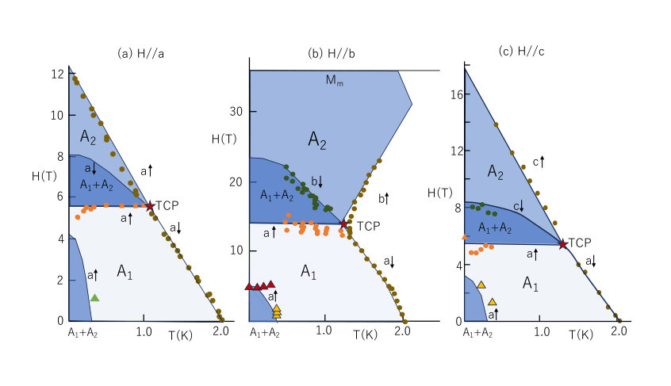
<figcaption class="paper-figure-caption"><b>Fig 1.</b> FIG. 1: Phase diagrams consisting of A1, A2, and its mixture A1+A2 for (a) H∥a-axis with the</figcaption>
</figure>
<figure class="paper-figure-card">
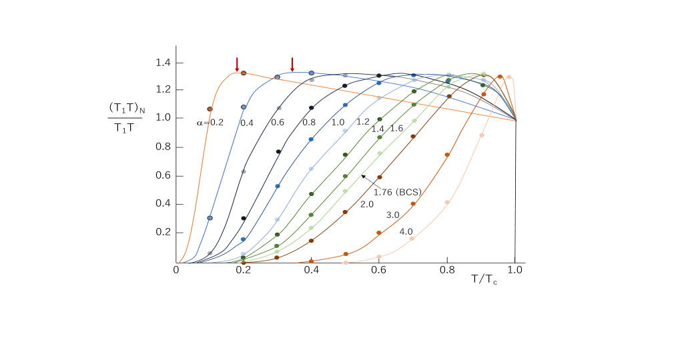
<figcaption class="paper-figure-caption"><b>Fig 2.</b> FIG. 2: The normalized (T1T)N/(T1T) as a function of T for various α values from larger to smaller</figcaption>
</figure>
<figure class="paper-figure-card">
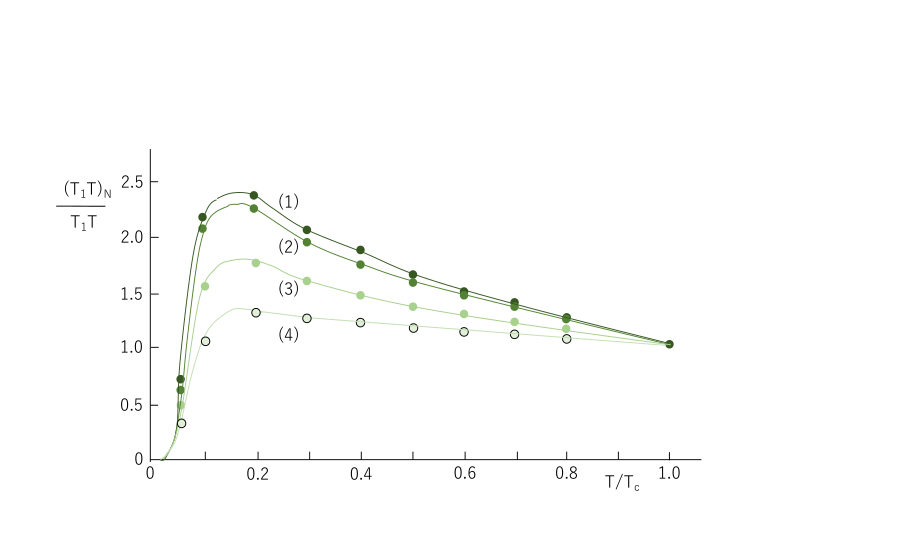
<figcaption class="paper-figure-caption"><b>Fig 3.</b> FIG. 3: (T1T)N/(T1T) as a function of T for various η. (1) η=0.00005, (2) 0.0001, (3) 0.001, and</figcaption>
</figure>
<figure class="paper-figure-card">
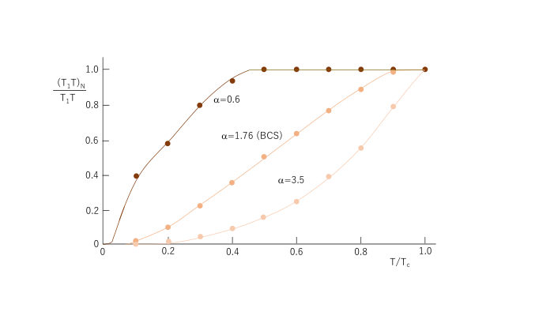
<figcaption class="paper-figure-caption"><b>Fig 4.</b> FIG. 4: (T1T)N/(T1T) as a function of T for various α, including the BCS case for the line nodes.</figcaption>
</figure>
<figure class="paper-figure-card">
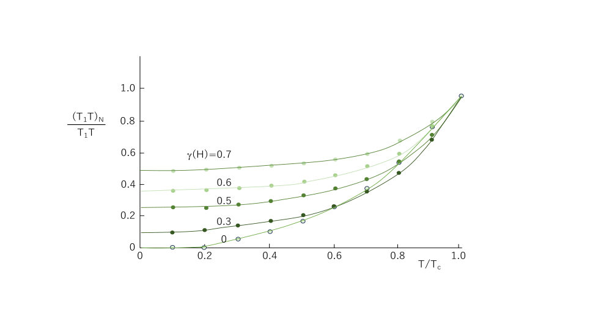
<figcaption class="paper-figure-caption"><b>Fig 5.</b> FIG. 5: (T1T)N/(T1T) for the line node case as a function of T in various γ(H) (α=3.5). After</figcaption>
</figure>
</div>

<p><strong>Summary.</strong> This work theoretically investigates the thermodynamics of superconductors with very low superfluid density, using UTe2 as a primary example. The authors predict the existence of a hidden second superconducting phase ($A_2$) and unify the phase diagram using a non-unitary spin-triplet pairing symmetry. By analyzing key observables like $1/T_1$ and $C(T)$, the paper provides a comprehensive theoretical picture for complex, multi-phase superconducting behavior.</p>
<p><strong>Why it may be interesting.</strong> The theoretical modeling of unconventional superconductivity, particularly the incorporation of spin-triplet pairing and the analysis of suppressed thermodynamic signatures, connects directly to advanced topics in strongly correlated electron physics relevant to AMO/quantum materials research.</p>
<details>
<summary>Detailed structure</summary>
<p><strong>Main problem.</strong> The paper theoretically explores the thermodynamic signatures of superconducting condensates exhibiting extremely small superfluid density, motivated by experimental findings in UTe2.</p>
<p><strong>Main result.</strong> It identifies a hidden second superconducting phase ($A_2$) in UTe2, suggesting a universal origin for the phase transition lines based on non-unitary spin-triplet pairing symmetry ($^3B_{3u}$).</p>
<p><strong>Method.</strong> The analysis uses theoretical derivations for generic thermodynamics of low-$
ho_s$ condensates, calculating observables like the nuclear spin-lattice relaxation rate ($1/T_1$) and specific heat ($C(T)$).</p>
<p><strong>Model / system.</strong> The system is the heavy Fermion superconductor UTe2. The theoretical framework involves modeling superconductivity using a non-unitary spin-triplet pairing symmetry, allowing for the description of multiple superconducting phases across the H-T-P phase space.</p>
<p><strong>Key observables.</strong> Superfluid density ($
ho_s$), phase stiffness, nuclear spin-lattice relaxation rate ($1/T_1$), specific heat jump ($\Delta C$), and the existence of multiple superconducting phases ($A_1, A_2$).</p>
<p><strong>Important parameters / regimes.</strong> Small superfluid density ($
ho_s$), the gap ratio ($\alpha = \Delta_0/k_B T_c$), and external parameters like magnetic field ($H$) and pressure ($P$).</p>
<p><strong>Assumptions / limitations.</strong> The analysis focuses on the limit of extremely small superfluid density, which suppresses characteristic superconducting signatures like the Hebel-Slichter peak.</p>
<p><strong>Figures summary.</strong> Figures illustrate phase diagrams in the H-T plane for different field directions, showing the coexistence of $A_1$ and $A_2$ phases, and plot the temperature dependence of $1/T_1$ and $C(T)$ for varying $\alpha$.</p>
<p><strong>Paper structure.</strong> The paper builds from analyzing the general thermodynamic signatures of low-$
ho_s$ condensates, applies these concepts to the specific case of UTe2, and develops a unified phase diagram incorporating multiple superconducting phases ($A_1$ and $A_2$) across the H-T-P space.</p>
</details>
<details>
<summary>Abstract</summary>
<p>Motivated by recent experimental findings on UTe$_2$ via NMR and specific heat experiments, we theoretically explore the thermodynamic signatures of condensates with small superfluid density and characterize their physical properties. We identify the hidden superconducting phase $A_2$ composed of spin-up Cooper pairs   at lower temperature ($T$) and field ($H$) under ambient pressure of UTe$_2$ and show that $A_2$ reappears at higher $H$ for all three principal field directions, $a$, $b$, and $c$-axis. The phase transition lines from the $A_1$ phase with spin down pairs to the $A_2$ phase in the $H$-$T$ plane are all horizontal in common, implying a universal physical origin due to the originating from the magnetic-energy gain of the spin-up pairing state with increasing magnetic field. This multiple-phase diagram is extended to these under pressure ($P$), resulting in a simple picture based on non-unitary spin-triplet pairing symmetry $^3B_{3u}$, which enables us to consistently capture the evolution of the superconducting phases throughout the entire $H$-$T$-$P$ phase space.</p>
</details>
<p><sub><a href="#top">↑ back to top</a></sub></p>

<p><a id="paper-2609.19289"></a></p>
<h3 id="momentum-dependent-precessional-and-nutational-spin-pumping-in-a-honeycomb-antiferromagnet"><a href="http://arxiv.org/abs/2609.19289v1">Momentum-dependent precessional and nutational spin pumping in a honeycomb antiferromagnet</a></h3>
<p><strong>Authors:</strong> Suman Mukherjee, Subhadip Ghosh, Ritwik Mondal<br>
<strong>Type:</strong> theory · <strong>Category:</strong> other · <strong>PDF:</strong> <a href="https://arxiv.org/pdf/2609.19289v1">https://arxiv.org/pdf/2609.19289v1</a><br>
<strong>Analysis basis:</strong> full PDF text, analyzed in chunks
<strong>Topic relevance:</strong> <code>Keldysh / 2PI / non-Gaussian methods</code> <strong>1/5</strong></p>
<div class="figure-strip-hint">↔ Scroll figures horizontally</div>
<div class="paper-figures-scroll">
<figure class="paper-figure-card">
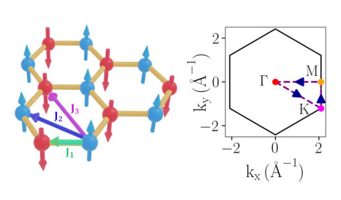
<figcaption class="paper-figure-caption"><b>Fig 1.</b> FIG. 1: Schematic illustration of two-dimensional MnPS3, showing the NN, NNN, and NNNN exchange interactions, denoted by J1, J2, and J3, respectively. The corresponding Brillouin zone and the high-symmetry path are also shown.</figcaption>
</figure>
<figure class="paper-figure-card">
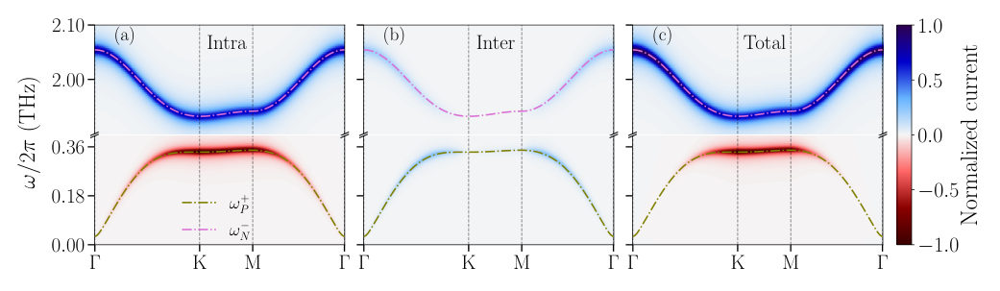
<figcaption class="paper-figure-caption"><b>Fig 2.</b> FIG. 2: Calculated magnon spectra with the weighted (a) intra-sublattice, (b) inter-sublattice, and (c) total spin pumping current along the high-symmetry points in the Brillouin zone.</figcaption>
</figure>
<figure class="paper-figure-card">
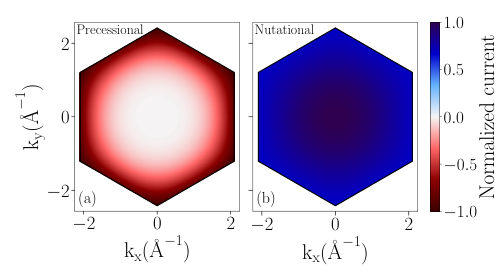
<figcaption class="paper-figure-caption"><b>Fig 3.</b> FIG. 3: Color maps of the normalized precessional and nutational spin pumping currents as functions of kx and ky across the Brillouin zone.</figcaption>
</figure>
<figure class="paper-figure-card">
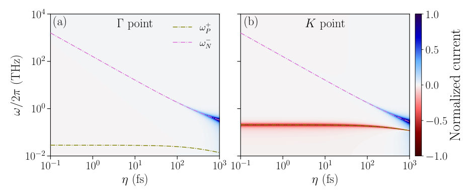
<figcaption class="paper-figure-caption"><b>Fig 4.</b> FIG. 4: Normalized precessional and nutational spin pumping currents as a function of the inertial relaxation time η at (a) Γ and (b) K.</figcaption>
</figure>
<figure class="paper-figure-card">
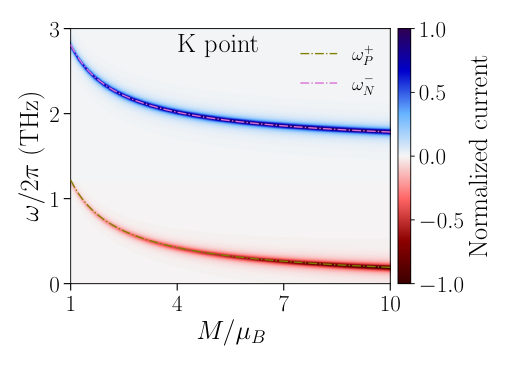
<figcaption class="paper-figure-caption"><b>Fig 5.</b> FIG. 5: The normalized precessional and nutational spin pumping currents as a function of magnetization at the K point.</figcaption>
</figure>
</div>

<p><strong>Summary.</strong> This theoretical work analyzes spin pumping in a honeycomb antiferromagnet by incorporating magnetic inertia, leading to the emergence of nutational dynamics alongside conventional precession. The key finding is the contrasting momentum dependence of these two spin pumping channels, which can be used to experimentally separate them. The results also show that the nutational response is highly sensitive to the inertial relaxation time.</p>
<p><strong>Why it may be interesting.</strong> The explicit inclusion of magnetic inertia leading to nutational dynamics, combined with momentum-resolved spin pumping calculations, provides a sophisticated theoretical tool to distinguish between different types of magnetic excitations in complex quantum magnets.</p>
<details>
<summary>Detailed structure</summary>
<p><strong>Main problem.</strong> The study investigates the momentum-dependent precessional and nutational spin pumping in a two-dimensional honeycomb antiferromagnet.</p>
<p><strong>Main result.</strong> The precessional and nutational spin pumping currents exhibit contrasting momentum dependencies across the Brillouin zone, allowing for their experimental distinction. Furthermore, the nutational current is strongly controlled by the inertial relaxation time, while the ratio of nutational to precessional current increases with the applied magnetic field.</p>
<p><strong>Method.</strong> The authors used a microscopic two-sublattice model incorporating spin inertia into the Landau-Lifshitz-Gilbert equation to calculate the magnon spectra and spin pumping contributions.</p>
<p><strong>Model / system.</strong> The system is a 2D honeycomb antiferromagnet, modeled using a two-sublattice approach with $J_1$-$J_2$-$J_3$ exchange interactions, and dynamics are governed by the inertial LLG equation.</p>
<p><strong>Key observables.</strong> Precessional and nutational spin pumping currents, their momentum dependence across the Brillouin zone ($\Gamma$ to $K$ to $M$), and the ratio of these currents under varying fields.</p>
<p><strong>Important parameters / regimes.</strong> Inertial relaxation time ($\eta$), exchange interaction strengths ($J_i$), and the strength of the static magnetic field ($\mathbf{B}$).</p>
<p><strong>Assumptions / limitations.</strong> The analysis uses a linearized inertial LLG equation and assumes the equilibrium magnetization is oriented out of the plane.</p>
<p><strong>Figures summary.</strong> Figures likely show color maps of the normalized precessional and nutational spin pumping currents across the Brillouin zone, illustrating their distinct momentum profiles.</p>
<p><strong>Paper structure.</strong> The paper builds upon previous work by extending the analysis of spin pumping from uniform ($\Gamma$ point) dynamics to map the currents across the entire Brillouin zone, detailing the role of spin inertia and external magnetic fields.</p>
</details>
<details>
<summary>Abstract</summary>
<p>The ultrafast magnetic inertial dynamics on subpicosecond timescales generate an additional high-frequency terahertz nutational resonance. Here, we investigate momentum-resolved spin pumping in a two-dimensional honeycomb antiferromagnet by incorporating spin inertia into the Landau-Lifshitz-Gilbert equation. Using a microscopic two-sublattice model with $J_1$-$J_2$-$J_3$ exchange interactions, we calculate the precessional and nutational magnon spectra and their corresponding intra- and inter-sublattice spin pumping contributions throughout the Brillouin zone. For parameters representative of MnPS$_3$, we find a pronounced complementary momentum dependence of the two spin pumping channels: the precessional current is strongly suppressed around the $Γ$ point ($0.01\%$) and increases towards the Brillouin zone boundary ($100\%$ at $K$ and $87\%$ at $M$), whereas the nutational current is largest near $Γ$ ($100\%$) and decreases towards the boundary ($68\%$ at $K$ and $69\%$ at $M$). This contrasting momentum dependence provides a means of distinguishing spin nutation from conventional precessional motion. We further demonstrate that the nutational spin pumping current is strongly controlled by the inertial relaxation time $η$, in contrast to the comparatively weak $η$ dependence of the precessional current. In the small-$η$ regime, our analytical results show that the intra-sublattice nutational spin pumping current exhibits a leading-order dependence of $1/η^3$. The spin pumping response can also be tuned through the exchange interaction strengths and magnetic moment. Our further results on the magnetic field dependence of spin pumping reveal that the ratio of nutational spin pumping current increases with magnetic field strength, whereas the corresponding precessional counterpart decreases.</p>
</details>
<p><sub><a href="#top">↑ back to top</a></sub></p>

<p><a id="paper-2609.19700"></a></p>
<h3 id="observation-of-dyakonov-perel-type-magnon-spin-relaxation-in-uniaxial-antiferromagnetic-insulators"><a href="http://arxiv.org/abs/2609.19700v1">Observation of Dyakonov-Perel-type magnon spin relaxation in uniaxial antiferromagnetic insulators</a></h3>
<p><strong>Authors:</strong> Qinwu Gao, Andi Cong, Bokai Liang, Meng Yang, Jingjing Liu, Lang Chen, Shiwei Wu, Ka Shen, Junxue Li<br>
<strong>Type:</strong> experiment · <strong>Category:</strong> other · <strong>PDF:</strong> <a href="https://arxiv.org/pdf/2609.19700v1">https://arxiv.org/pdf/2609.19700v1</a><br>
<strong>Analysis basis:</strong> full PDF text, analyzed in chunks
<strong>Topic relevance:</strong> <code>correlated / nonlocal dissipation</code> <strong>1/5</strong></p>
<div class="figure-strip-hint">↔ Scroll figures horizontally</div>
<div class="paper-figures-scroll">
<figure class="paper-figure-card">
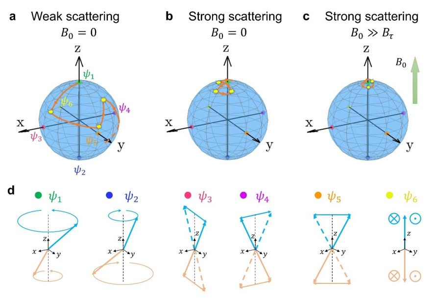
<figcaption class="paper-figure-caption"><b>Fig 1.</b> Fig. 1. D’yakonov-Perel’ (DP)-type magnon spin relaxation in uniaxial antiferromagnet. a, b, c The</figcaption>
</figure>
<figure class="paper-figure-card">
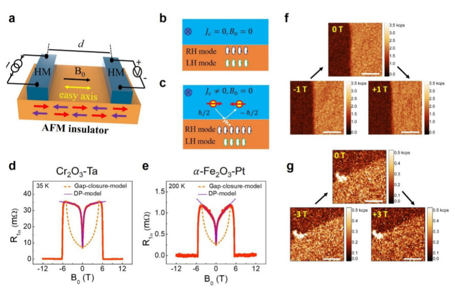
<figcaption class="paper-figure-caption"><b>Fig 2.</b> Fig. 2. Long-distance spin current transport and antiferromagnetic domain images in uniaxial</figcaption>
</figure>
<figure class="paper-figure-card">
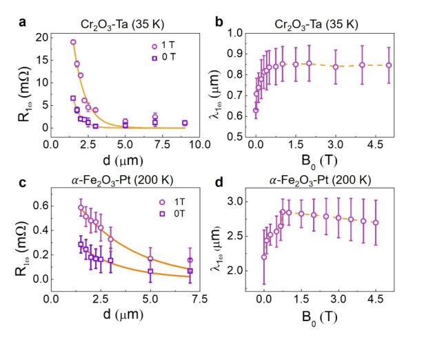
<figcaption class="paper-figure-caption"><b>Fig 3.</b> Fig. 3. Magnetic field suppression of magnon spin relaxation in the uniaxial antiferromagnetic</figcaption>
</figure>
<figure class="paper-figure-card">
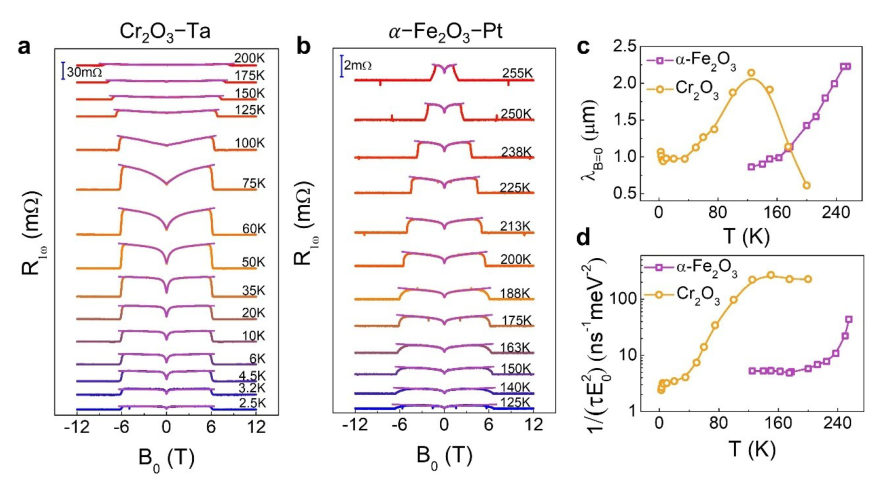
<figcaption class="paper-figure-caption"><b>Fig 4.</b> Fig. 4. Temperature dependence of magnon spin diffusion length. a, b First-harmonic nonlocal</figcaption>
</figure>
</div>

<p><strong>Summary.</strong> This work investigates magnon spin relaxation in uniaxial AFM insulators using nonlocal transport measurements. The authors successfully identify the Dyakonov-Perel mechanism as the governing relaxation process, explaining field-dependent enhancements in the spin signal and the temperature dependence of the spin diffusion length. These findings are crucial for designing low-dissipation antiferromagnetic spintronic devices.</p>
<p><strong>Why it may be interesting.</strong> The application of the DP mechanism, typically associated with electron spin relaxation, to magnons provides a powerful, transferable theoretical tool for understanding spin dynamics in insulating magnetic systems, which is relevant to quantum spintronics.</p>
<details>
<summary>Detailed structure</summary>
<p><strong>Main problem.</strong> The primary goal is to elucidate the elusive magnon spin relaxation mechanisms governing spin current transport in antiferromagnetic (AFM) insulators.</p>
<p><strong>Main result.</strong> The study reports that the Dyakonov-Perel-type mechanism governs spin current transport in $   ext{Cr}_2   ext{O}_3$ and $\alpha	ext{-Fe}_2	ext{O}_3$, evidenced by field-dependent enhancements in the nonlocal signal and saturation of the spin diffusion length.</p>
<p><strong>Method.</strong> The research combines nonlocal transport measurements (using AC and DC techniques) with theoretical modeling based on the DP relaxation mechanism.</p>
<p><strong>Model / system.</strong> The physical systems are uniaxial AFM insulators ($ ext{Cr}_2   ext{O}_3$ and $\alpha	ext{-Fe}_2	ext{O}_3$). The theoretical framework models magnon spin relaxation using the Dyakonov-Perel analogy, treating magnons as carrying pseudospin.</p>
<p><strong>Key observables.</strong> Nonlocal first-harmonic resistance ($R_{1\omega}$), magnon spin diffusion length ($\lambda_s$), and the dependence of these quantities on applied magnetic field ($B_0$) and temperature.</p>
<p><strong>Important parameters / regimes.</strong> Magnetic field strength (especially relative to the spin-flop transition field $B_{SF}$), temperature, and the characteristic relaxation time ($    au_s$).</p>
<p><strong>Assumptions / limitations.</strong> The analysis assumes the spin current propagates along the easy axis and draws an analogy between magnon dynamics and electron spin dynamics.</p>
<p><strong>Figures summary.</strong> Figures illustrate the DP-type relaxation on the Bloch sphere, the measurement setup, and comparisons between different theoretical models (e.g., gap closure vs. DP-model) for the nonlocal resistance.</p>
<p><strong>Paper structure.</strong> The paper first establishes the context of magnon spin transport, then presents the experimental measurements showing field-dependent anomalies, systematically rules out alternative relaxation mechanisms, and finally confirms the DP-type model by fitting the field and temperature dependencies of the key observables.</p>
</details>
<details>
<summary>Abstract</summary>
<p>Long-distance transport of magnon spin currents in antiferromagnetic (AFM) insulators has attracted tremendous attention recently, however, the AFM magnon spin relaxation mechanisms remain elusive. Here, we report that the Dyakonov-Perel-type magnon spin relaxation mechanism governs the spin current transport along the easy axis in two prototypical uniaxial AFM insulators, Cr2O3 and alpha-Fe2O3. First, an over 450% enhancement of the first-harmonic nonlocal signal induced by a magnetic field is observed prior to the spin-flop transition, which can be well-interpreted by our model incorporating Dyakonov-Perel-type magnon spin relaxation. Secondly, we find that the magnon spin diffusion length in both crystals increases with magnetic field and saturates at fields above 0.8 T, consistent with our model. Finally, the temperature dependence of the zero-field magnon spin diffusion length in both AFM insulators can be qualitatively explained through our model. These findings are valuable for the development of low-dissipation antiferromagnetic spintronic devices.</p>
</details>
<p><sub><a href="#top">↑ back to top</a></sub></p>

<p><a id="paper-2609.19686"></a></p>
<h3 id="superconductivity-at-the-metal-insulator-phase-boundary-in-a-bulk-nickelate-at-ambient-pressure"><a href="http://arxiv.org/abs/2609.19686v1">Superconductivity at the metal-insulator phase boundary in a bulk nickelate at ambient pressure</a></h3>
<p><strong>Authors:</strong> Hyo-Bin Ahn, Xinglong Chen, Hong Zheng, Yu Zhang, Ramakanta Chapai, Yu Li, Arashdeep S. Thind, Robert F. Klie, Michael R. Norman, Ulrich Welp, J. F. Mitchell, Daniel Phelan<br>
<strong>Type:</strong> experiment · <strong>Category:</strong> strongly correlated electrons · <strong>PDF:</strong> <a href="https://arxiv.org/pdf/2609.19686v1">https://arxiv.org/pdf/2609.19686v1</a><br>
<strong>Analysis basis:</strong> full PDF text, analyzed in chunks
<strong>Topic relevance:</strong> <code>analog quantum simulation</code> <strong>1/5</strong></p>
<div class="figure-strip-hint">↔ Scroll figures horizontally</div>
<div class="paper-figures-scroll">
<figure class="paper-figure-card">
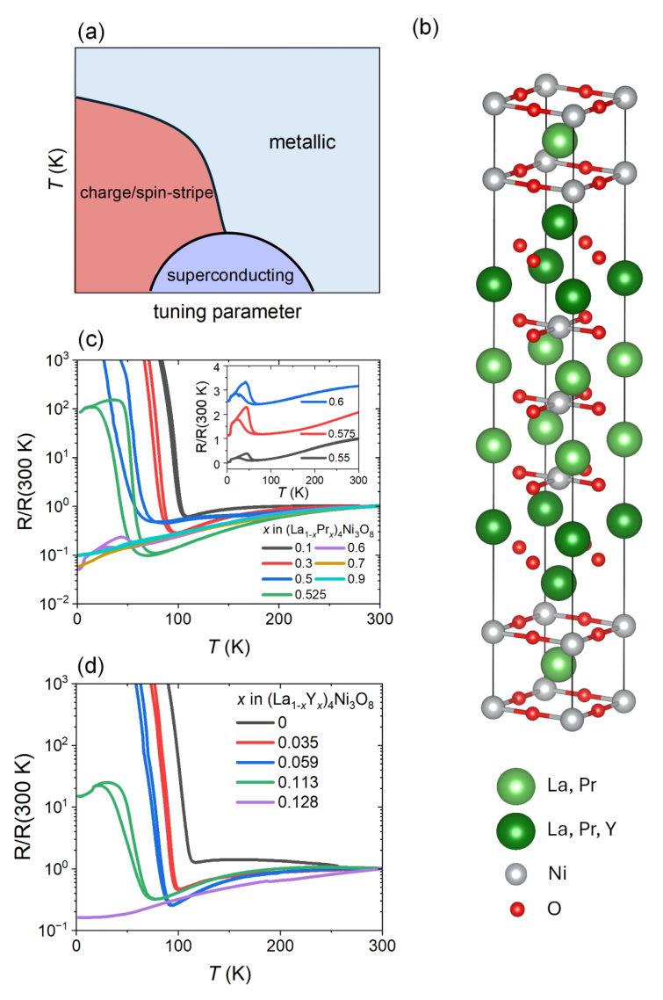
<figcaption class="paper-figure-caption"><b>Fig 1.</b> Fig. 1: (a) Generic phase diagram of a tuning parameter suppressing a density wave leading to superconductivity. (b) Trilayer R4Ni3O8 structure. The R sites are distinguished by two colors of green to separate those from the fluorite-like spacer layers from those inside the trilayers. (c, d) Normalized resistance versus temperature for LPNO and LYNO for different values of x. The inset in (c) shows the data over a narrower range of x, from 0.55 to 0.6.</figcaption>
</figure>
<figure class="paper-figure-card">
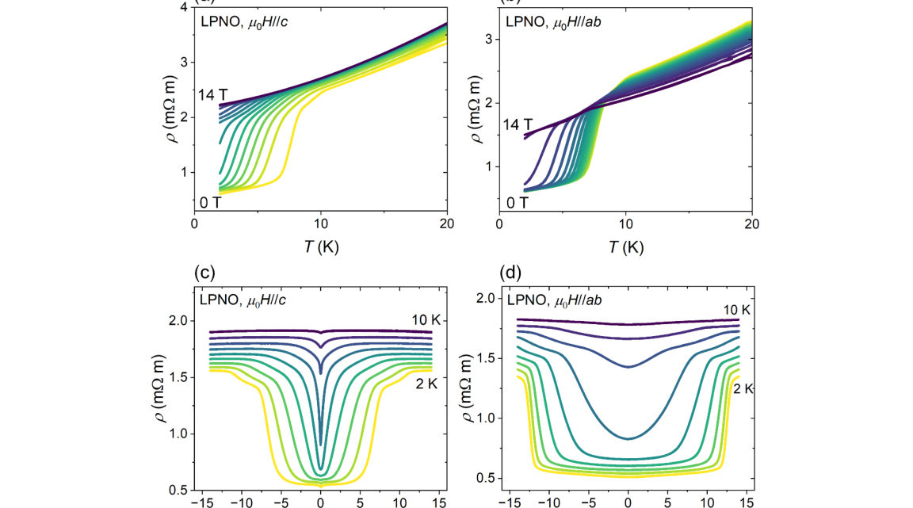
<figcaption class="paper-figure-caption"><b>Fig 2.</b> Fig. 2: Resistivity as a function of temperature for LPNO (x=0.55) measured with various magnetic fields applied parallel to the c-axis (a) and parallel to the ab-plane (b), and isothermal field sweeps of the resistivity measured with magnetic field applied parallel to the c-axis (c) and parallel to the ab-plane (d).</figcaption>
</figure>
<figure class="paper-figure-card">
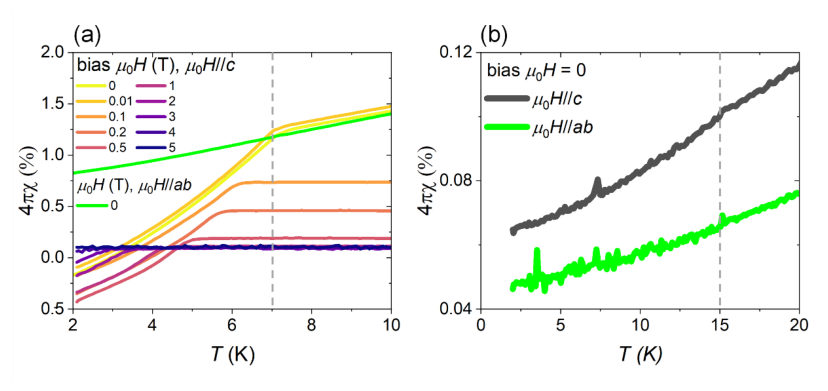
<figcaption class="paper-figure-caption"><b>Fig 3.</b> Fig. 3: χ’ from AC susceptibility measurements of (a) LPNO (x=0.55) and (b) LYNO (x=0.11) with applied DC bias fields parallel to c-axis, as specified. Note the absence of a diamagnetic anomaly for the magnetic field applied parallel to ab-plane (green curves). The vertical dashed line indicates the zero-field resistive TC.</figcaption>
</figure>
<figure class="paper-figure-card">
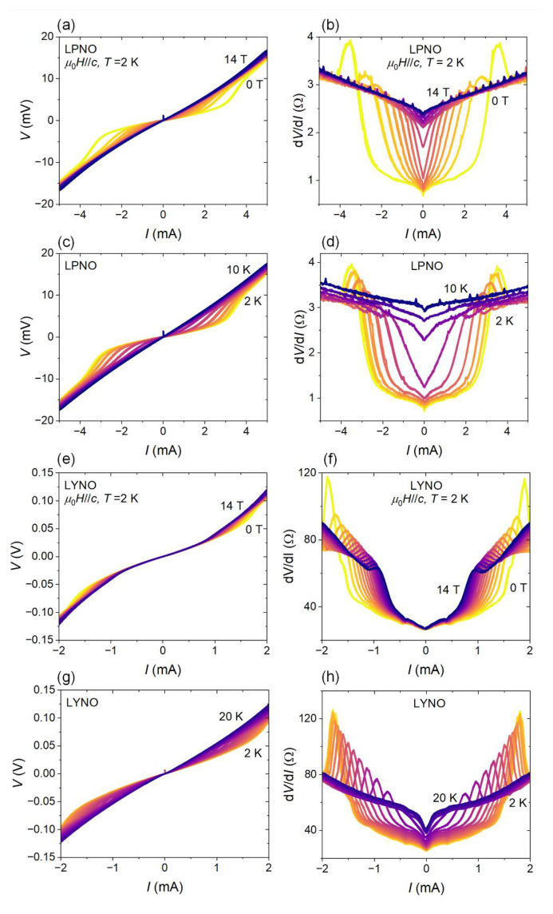
<figcaption class="paper-figure-caption"><b>Fig 4.</b> Fig. 4: (a) I-V characteristics of LPNO (x=0.55) at T=2 K measured with various magnetic fields applied parallel to the c-axis. (b) Differential resistance (dV/dI) for data shown in (a). (c) I-V characteristics of LPNO (x=0.55) at zero-field for various temperatures. (d) Differential resistance for data shown in (c). (e-h) Corresponding plots to (a-d) for LYNO (x=0.11).</figcaption>
</figure>
<figure class="paper-figure-card">
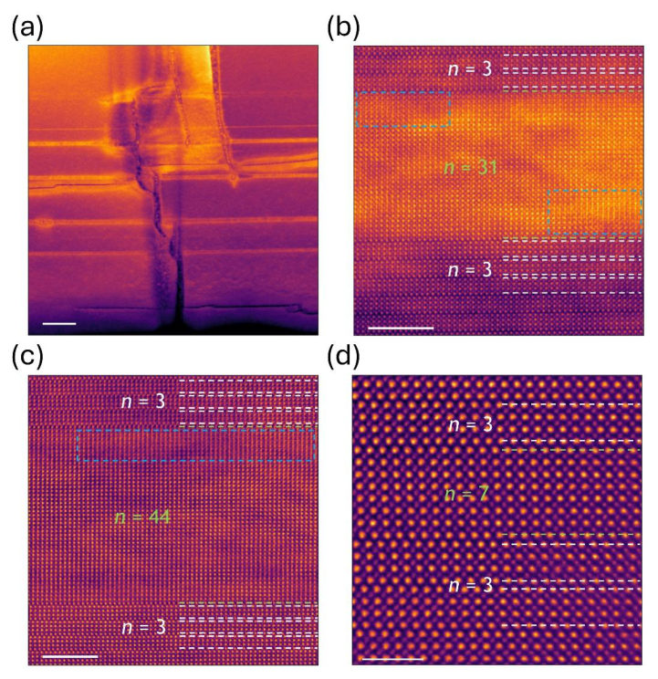
<figcaption class="paper-figure-caption"><b>Fig 5.</b> Fig. 5: STEM images for an LPNO crystal (x=0.55). (a) A wide field-of-view STEM-LAADF image showing a high density of defects. (b) STEM-LAADF image showing an incoherently strained intergrowth region with n = 31. STEM-HAADF images showing intergrowth regions with (c) n = 44 and (d) n = 7, respectively. The blue boxes in (b) and (c) highlight the defects associated with the incoherent strain in the intergrowth regions. Scale bars correspond to 100 nm for (a), 5 nm for (b) and (c), and 2 nm for (d).</figcaption>
</figure>
</div>

<p><strong>Summary.</strong> This work reports ambient-pressure superconductivity in bulk nickelates by tuning the system near the metal-insulator phase boundary using lanthanide substitution. The findings establish that the electronic structure is profoundly controlled by the spacer layer volume, suggesting that phase competition is the key mechanism for achieving high-temperature superconductivity in this material class.</p>
<p><strong>Why it may be interesting.</strong> The strong correlation between structural parameters (spacer layer volume) and the superconducting phase diagram mirrors concepts in strongly correlated electron systems where lattice strain or doping tunes the proximity to a quantum critical point.</p>
<details>
<summary>Detailed structure</summary>
<p><strong>Main problem.</strong> The study investigates the emergence and nature of superconductivity in bulk nickelate single crystals at ambient pressure, particularly focusing on the region near the metal-insulator phase boundary.</p>
<p><strong>Main result.</strong> Superconductivity is observed in both Pr and Y substituted nickelates proximate to the insulator-metal transition, suggesting that phase competition and spacer-layer engineering are key to realizing bulk superconductivity.</p>
<p><strong>Method.</strong> The research employs magneto-transport measurements (resistivity, susceptibility) and controlled chemical processing (reduction/oxidation cycles) to probe the electronic state and superconducting properties.</p>
<p><strong>Model / system.</strong> The system is bulk nickelate single crystals, specifically (La1-xPrx)4Ni3O8 and (La1-xYx)4Ni3O8, which feature an interleaving structure of square-planar nickel oxide trilayers and fluorite-like spacer layers.</p>
<p><strong>Key observables.</strong> Superconducting signatures (resistive drops, diamagnetic susceptibility), the location of the insulator-metal phase boundary, and the sensitivity of superconductivity to oxygen stoichiometry.</p>
<p><strong>Important parameters / regimes.</strong> The volume of the fluorite-like spacer layers, the doping concentration ($x$), and the oxygen content (controlled via reduction/oxidation cycles).</p>
<p><strong>Assumptions / limitations.</strong> The superconducting state is non-percolative, and the electronic phase diagram can be parameterized by the spacer layer volume, suggesting steric engineering is a primary control mechanism.</p>
<p><strong>Figures summary.</strong> Figures show the evolution of resistivity and AC susceptibility across doping series and during controlled reduction/oxidation cycles, demonstrating the emergence and suppression of superconductivity based on stoichiometry.</p>
<p><strong>Paper structure.</strong> The paper systematically explores the phase diagram by varying doping (Pr/Y substitution) to tune the system across the insulator-metal boundary, followed by detailed transport measurements and chemical tuning using controlled redox cycles to confirm the role of oxygen stoichiometry.</p>
</details>
<details>
<summary>Abstract</summary>
<p>The discovery of superconductivity in nickelates has seeded a new field for exploring unconventional superconductivity in transition metal oxides. However, to date superconductivity has only been realized in thin films or under extreme pressure in the bulk. Here we report signatures of superconductivity at ambient pressure in bulk nickelate single crystals of (La1-xPrx)4Ni3O8 and (La1-xYx)4Ni3O8, whose crystal structure comprises interleaving trilayers of square-planar nickel oxide and fluorite-like spacer layers. The parent compound La4Ni3O8 exhibits an insulating ground state, where electrons order into intertwined, insulating charge/spin stripes. Substitution of smaller lanthanide ions disrupts this order, eventually leading to a metallic ground-state. We find that superconductivity emerges in a narrow window proximate to the insulator-metal phase boundary, where both metallic and charge-stripe phases co-exist. The observed low volume-fraction superconductivity is non-percolative, suggesting the prospect of filamentary superconductivity nucleated at the boundary between these phases. However, intergrowth defects that approximate the known infinite layer nickelates are observed in TEM, leaving open the possibility that superconductivity resides here rather than in the trilayer matrix. Remarkably, the electronic phase diagrams of both the Y and Pr series coincide when parameterized by the volume of the fluorite like spacer layers, revealing that this steric parameter profoundly modifies the nickel oxide trilayer electronic structure. Our results identify better understanding of the co-existence region between metallic and charge-ordered phases as a priority for expanding the range of bulk, ambient-pressure nickelate superconductivity and establish spacer-layer engineering as a design tool for exploring this regime of phase competition.</p>
</details>
<p><sub><a href="#top">↑ back to top</a></sub></p>

<p><a id="paper-2609.20364"></a></p>
<h3 id="superconductivity-in-pb2-xbixpd-single-crystals"><a href="http://arxiv.org/abs/2609.20364v1">Superconductivity in Pb2-xBixPd Single Crystals</a></h3>
<p><strong>Authors:</strong> S. Srivastava, R. P. Singh<br>
<strong>Type:</strong> experiment · <strong>Category:</strong> other · <strong>PDF:</strong> <a href="https://arxiv.org/pdf/2609.20364v1">https://arxiv.org/pdf/2609.20364v1</a><br>
<strong>Analysis basis:</strong> full PDF text, analyzed in chunks
<strong>Topic relevance:</strong> <code>analog quantum simulation</code> <strong>1/5</strong></p>
<div class="figure-strip-hint">↔ Scroll figures horizontally</div>
<div class="paper-figures-scroll">
<figure class="paper-figure-card">
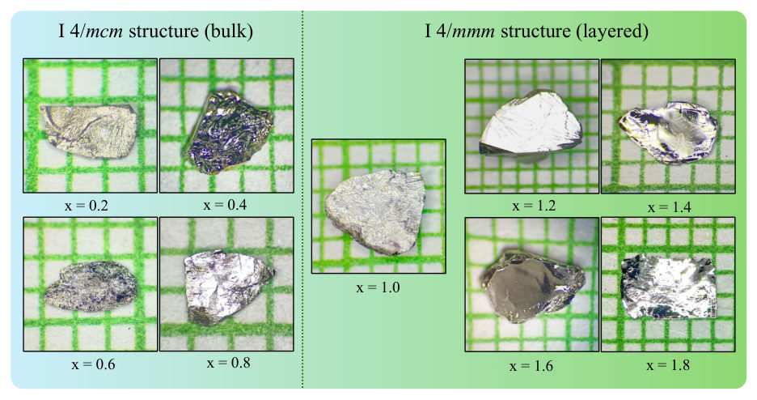
<figcaption class="paper-figure-caption"><b>Fig 1.</b> FIG. 1. Microscopic images of as grown single crystals for Pb2–xBixPd. Crystals with I4/mcm structure (x = 0.2 −0.8) have bulk morphology, whereas the I4/mmm structure crystals (x = 1.0 −1.8) have layered structure.</figcaption>
</figure>
<figure class="paper-figure-card">
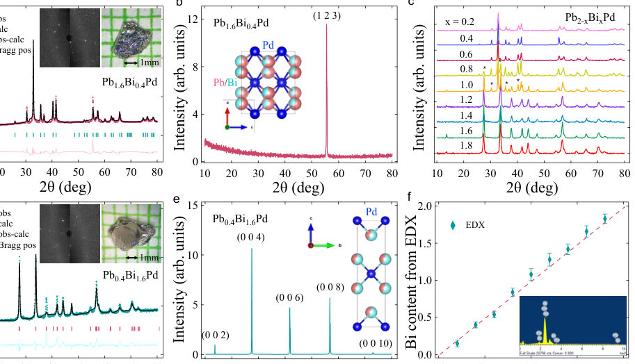
<figcaption class="paper-figure-caption"><b>Fig 2.</b> FIG. 2. (a) and (d) Rietveld refinement of powder XRD for Pb1.6Bi0.4Pd and Pb0.4Bi1.6Pd samples, respectively, at room temperature. The linked insets show the Laue diffraction patterns (left) and microscopic images (right) for the respective single crystals. (b) and (e) Room temperature XRD on the single crystals of Pb1.6Bi0.4Pd and Pb0.4Bi1.6Pd, respectively. The insets of (b) and (e) represent the crystal structures of Pb2–xBixPd, for x &lt; 1 and x ≥1, respectively. The blue balls represent the Pd atoms, and the pink/cyan ball denotes the Pb/Bi atoms. (c) Powder XRD patterns for Pb2–xBixPd, 0.2 ≤x ≤1.8. The extra peaks due to phase mixing are represented by the asterisk (*). (f) Average Bi...</figcaption>
</figure>
<figure class="paper-figure-card">
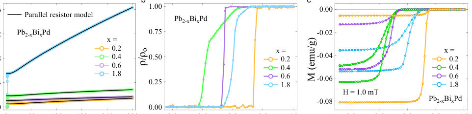
<figcaption class="paper-figure-caption"><b>Fig 3.</b> FIG. 3. (a) The variation of resistivity with temperature (1.9 K to 300 K) under zero magnetic field for Pb2–xBixPd, x = 0.2, 0.4, 0.6, and 1.8, fitted with the parallel resistor model. (b) The normalized resistivity versus temperature indicates a zero drop in resistivity for the compounds. (c) Temperature dependence of the magnetization in ZFCW and FCC modes under 1 mT magnetic field for the compounds.</figcaption>
</figure>
<figure class="paper-figure-card">
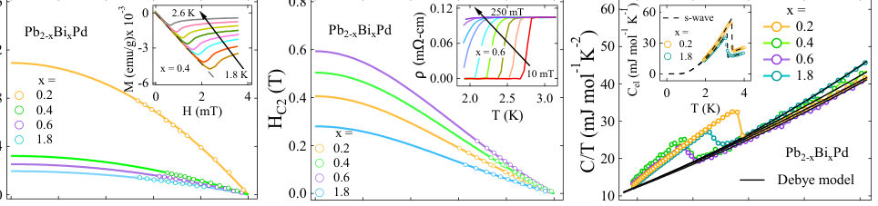
<figcaption class="paper-figure-caption"><b>Fig 4.</b> FIG. 4. The reduced temperature (T/TC) variation of the (a) lower critical field, and the (b) upper critical field for Pb2–xBixPd single crystals, fitted with the GL equations to obtain the HC1(0) and HC2(0), respectively. The inset of (a) shows the magnetic field variation of magnetization for Pb1.6Bi0.4Pd at different temperatures (1.8 K to 2.6 K), and the inset of (b) shows the temperature variation of resistivity between different applied magnetic fields of 10 mT to 250 mT for Pb1.4Bi0.6Pd. (c) C/T versus T 2 at H = 0 mT fitted with Debye model (Eq. 9). Inset: Temperature variation of electronic specific heat, Cel(T) best fitted with the isotropic s-wave model.</figcaption>
</figure>
<figure class="paper-figure-card">
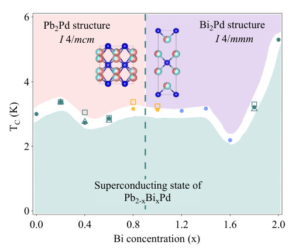
<figcaption class="paper-figure-caption"><b>Fig 5.</b> FIG. 5. Superconducting phase diagram for the Pb2–xBixPd single crystals. The green, yellow, and blue markers indicate single-phase bulk superconductors, mixed-phase bulk super- conductors, and superconductors with volume fraction less than 2%, respectively. Circle, square, and triangle markers show TC from magnetization, resistivity, and specific heat, respectively. The green dotted line marks the transition in the crystal structure. The TC for Pb2Pd and Bi2Pd were taken from Refs. [29, 39].</figcaption>
</figure>
</div>

<p><strong>Summary.</strong> This work systematically studies the superconducting properties of $   ext{Pb}_{2-x}   ext{Bi}_x   ext{Pd}$ single crystals by varying the Pb/Bi ratio. The researchers found that doping causes a structural phase transition while maintaining weak-coupling, s-wave superconductivity. The comprehensive analysis uses multiple techniques to map out the superconducting phase diagram.</p>
<p><strong>Why it may be interesting.</strong> While primarily condensed matter, the study of tunable superconducting gaps and phase transitions in chemically substituted materials provides insights into pairing mechanisms relevant to strongly correlated electron systems.</p>
<details>
<summary>Detailed structure</summary>
<p><strong>Main problem.</strong> The study investigates how chemical substitution of Pb with Bi affects the structural, superconducting, and topological properties of the $   ext{Pb}_2   ext{Pd}$ and $eta-	ext{Bi}_2	ext{Pd}$ systems.</p>
<p><strong>Main result.</strong> The doping induces a controlled structural phase transition, and all superconducting samples behave as weakly-coupled type-II superconductors with isotropic s-wave gaps.</p>
<p><strong>Method.</strong> The research combines single-crystal synthesis via the modified Bridgman technique with extensive characterization using XRD, magnetization (SQUID), resistivity, and specific heat measurements.</p>
<p><strong>Model / system.</strong> The physical system is the $    ext{Pb}_{2-x}   ext{Bi}_x   ext{Pd}$ single crystal, studied across a doping range ($0.2 \le x \le 1.8$). Superconductivity is analyzed using models like the parallel resistor model and Ginzburg-Landau theory.</p>
<p><strong>Key observables.</strong> Superconducting Transition Temperature ($T_c$), critical fields ($H_{C1}, H_{C2}$), superconducting volume fraction (SVF), and structural phase transition markers.</p>
<p><strong>Important parameters / regimes.</strong> Doping concentration ($x$), lattice parameters, and the Ginzburg-Landau parameter ($\kappa_{GL}$), which increases with doping.</p>
<p><strong>Assumptions / limitations.</strong> The analysis assumes the applicability of the parallel resistor model for resistivity fitting and uses standard superconducting models (GL equations) to characterize the phase.</p>
<p><strong>Figures summary.</strong> Figures show crystal morphology changes (bulk vs. layered structure) based on doping, XRD patterns confirming crystal structure, and resistivity vs. temperature curves demonstrating the zero resistance drop.</p>
<p><strong>Paper structure.</strong> The paper follows a standard experimental structure: introduction of the doping concept, detailed characterization of structure (XRD/Laue), measurement of superconducting properties ($
ho(T)$, $M(T)$, $C(T)$), and analysis using established superconducting models.</p>
</details>
<details>
<summary>Abstract</summary>
<p>Chemical substitution provides an effective route to tune the structural and superconducting properties and to explore the evolution of superconductivity across related materials. In this work, we investigate the effect of Pb/Bi mixing on superconductivity in possible topological superconductors \ch{Pb2Pd} and $β$-\ch{Bi2Pd}, by synthesizing and characterizing single crystals of \ch{Pb_{2-x}Bi_{x}Pd} ($0.2\le x\le1.8$). Increasing Bi content triggers a structural phase transition from non-symmorphic ($I4/mcm$, $x<1$) to layered ($I4/mmm$, $x\ge1$) and induces a monotonic expansion of the lattice parameters. Across the doped range, all superconducting samples behave as weakly-coupled type-II superconductors exhibiting isotropic s-wave superconducting gaps.</p>
</details>
<p><sub><a href="#top">↑ back to top</a></sub></p>

<p><a id="paper-2609.19436"></a></p>
<h3 id="the-origin-of-imperfection-sensitivity-in-the-buckling-of-cylindrical-shells"><a href="http://arxiv.org/abs/2609.19436v1">The Origin of Imperfection Sensitivity in the Buckling of Cylindrical Shells</a></h3>
<p><strong>Authors:</strong> Tian Yang, Tobias M. Schneider<br>
<strong>Type:</strong> theory · <strong>Category:</strong> other · <strong>PDF:</strong> <a href="https://arxiv.org/pdf/2609.19436v1">https://arxiv.org/pdf/2609.19436v1</a><br>
<strong>Analysis basis:</strong> full PDF text, analyzed in chunks
<strong>Topic relevance:</strong> <code>analog quantum simulation</code> <strong>1/5</strong></p>
<div class="figure-strip-hint">↔ Scroll figures horizontally</div>
<div class="paper-figures-scroll">
<figure class="paper-figure-card">
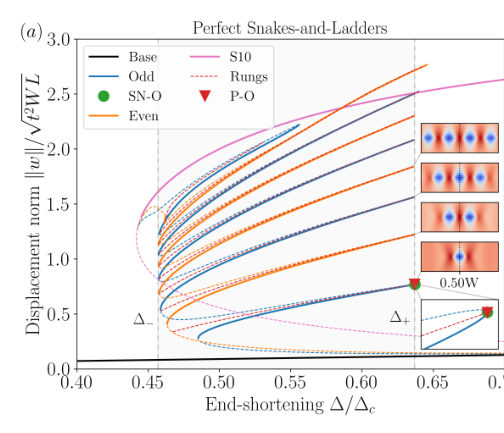
<figcaption class="paper-figure-caption"><b>Fig 1.</b> FIG. 1. Bifurcation diagrams of the normalized radial-displacement norm, ∥w∥/ √</figcaption>
</figure>
<figure class="paper-figure-card">
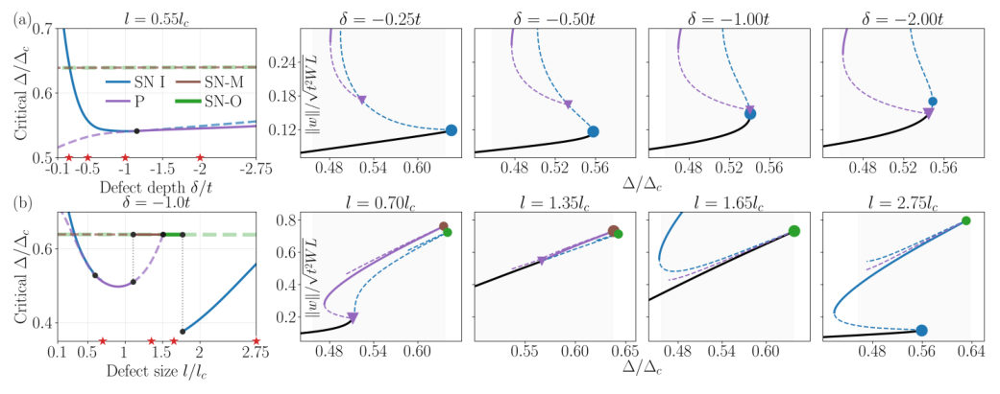
<figcaption class="paper-figure-caption"><b>Fig 2.</b> FIG. 2. (a) Normalized critical end-shortening ∆/∆c versus defect depth δ/t at fixed l/lc = 0.55, with representative bifurcation diagrams for δ/t = −0.25, −0.50, −1.00, and −2.00. (b) Corresponding dependence on defect size l/lc at fixed δ/t = −1.0, with bifurcation diagrams for l/lc = 0.70, 1.35, 1.65, and 2.75. Blue, purple, brown, and green curves denote SN I, P, SN-M, and SN-O, respectively. Solid curves identify the bifurcation that triggers buckling; dashed curves show the remaining bifurcations. Black markers indicate transitions between primary buckling bifurcations, with dotted lines in (b) marking discontinuous changes in the buckling threshold. Red stars mark the parameter...</figcaption>
</figure>
<figure class="paper-figure-card">
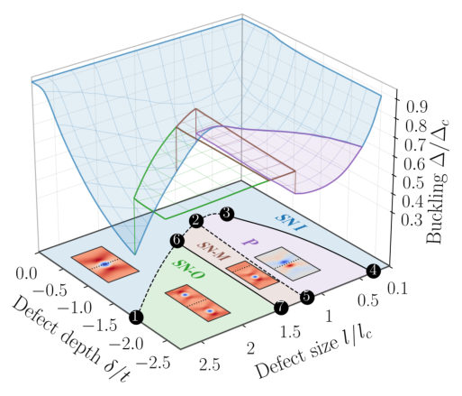
<figcaption class="paper-figure-caption"><b>Fig 3.</b> FIG. 4. The colored defect-parameter plane (δ/t, l/lc) iden- tifies the primary buckling bifurcation in each region; the insets show representative eigenmodes with the dotted line indicating the defect location. The normalized buckling end-shortening, ∆/∆c, is plotted as color-matched surfaces. Markers 1–7 divide the region boundaries into six segments. Segments 1–6, 6–2 and 2–3 indicate the existence of SN I, while segment 3–4 indicates the relative position of SN I and P. Segment 2–5 marks where P changes between subcritical and supercritical; when P is supercritical, buckling instead occurs at SN-M. Segment 6–7 marks the disappearance of P, beyond which buckling occurs at SN-O on the...</figcaption>
</figure>
<figure class="paper-figure-card">
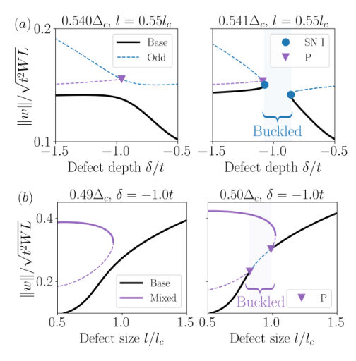
<figcaption class="paper-figure-caption"><b>Fig 4.</b> FIG. 3. Bifurcation diagrams obtained by continuation in (a) defect depth δ/t at fixed l/lc = 0.55 for ∆/∆c = 0.540 and 0.541, and (b) defect size l/lc at fixed δ/t = −1.0 for ∆/∆c = 0.49 and 0.50. The SN I bifurcations in (a) bound an interval where the base branch is absent, whereas the P bifurcations in (b) bound an interval where it is unstable. These intervals widen as ∆increases, confirming the non- monotonic dependence of ∆SNI on δ and of ∆P on l.</figcaption>
</figure>
</div>

<p><strong>Summary.</strong> This paper investigates why small imperfections cause large variations in the buckling load of cylindrical shells. Using bifurcation analysis, the authors demonstrate that the sensitivity stems not just from the defect's size, but from how the defect's geometry alters the underlying mathematical structure of the shell's stability manifold. This provides a deep, structural understanding of mechanical instability.</p>
<p><strong>Why it may be interesting.</strong> While focused on classical mechanics, the concept of how a small perturbation (the defect) fundamentally alters the stability landscape by pinning an existing equilibrium structure is analogous to how local disorder can dictate the global behavior of quantum systems, such as in localization phenomena.</p>
<details>
<summary>Detailed structure</summary>
<p><strong>Main problem.</strong> The study aims to uncover the fundamental origin of extreme imperfection sensitivity observed in the buckling of thin cylindrical shells, where minor geometric flaws cause drastic changes in the critical buckling load.</p>
<p><strong>Main result.</strong> Imperfection sensitivity is not merely a function of the defect's magnitude, but rather a sensitivity of the underlying bifurcation structure to the defect's specific geometry. The defect pins pre-existing localized equilibria, fundamentally altering the bifurcation path that triggers buckling.</p>
<p><strong>Method.</strong> The research employs advanced numerical continuation and bifurcation analysis techniques, systematically varying the depth and size of a localized Gaussian defect.</p>
<p><strong>Model / system.</strong> The physical system is a thin cylindrical shell subjected to axial compression, modeled using a geometrically exact shell theory (Cosserat surface). The analysis tracks the equilibrium states and stability boundaries as a function of applied load and defect parameters.</p>
<p><strong>Key observables.</strong> Critical end-shortening ($\Delta/\Delta_c$), the type of primary instability bifurcation (e.g., Saddle-Node, Pitchfork), and the reaction force ($P/P_c$).</p>
<p><strong>Important parameters / regimes.</strong> Defect depth ($\delta$), defect size ($l$), and the ratio of the applied end-shortening ($\Delta/\Delta_c$).</p>
<p><strong>Assumptions / limitations.</strong> The analysis relies on a finite-element discretization of geometrically exact shell theory and assumes that the buckling threshold is determined by the first loss of stability of the prebuckling state.</p>
<p><strong>Figures summary.</strong> Figures illustrate bifurcation diagrams showing the dependence of the critical load on defect depth and size, mapping out how the primary buckling bifurcation switches between symmetry-preserving and symmetry-breaking types.</p>
<p><strong>Paper structure.</strong> The paper establishes the physical model and the problem of imperfection sensitivity, then uses bifurcation analysis to show that the instability originates from pre-existing localized equilibria. It systematically varies defect parameters to demonstrate the non-monotonic and discontinuous dependence of the buckling threshold on defect geometry.</p>
</details>
<details>
<summary>Abstract</summary>
<p>Buckling of thin cylindrical shells under axial compression, a classical example of a subcritical instability, is highly sensitive to small imperfections, with minute geometric variations causing large changes in buckling threshold. To uncover the origin of this sensitivity, we use numerical continuation and bifurcation analysis while systematically varying the depth and size of a single localized Gaussian defect. We show that the instabilities of the imperfect shell originate from localized equilibria already present in the perfect shell. By breaking translation symmetry, the defect pins these equilibria and changes how they connect to the imperfect base state. Small changes in defect geometry can thereby switch the bifurcation that triggers buckling, producing non-monotonic and discontinuous changes in buckling threshold and abrupt changes in buckling mode. Imperfection sensitivity is therefore not simply sensitivity to imperfection magnitude, but sensitivity of the underlying bifurcation structure to imperfection geometry.</p>
</details>
<p><sub><a href="#top">↑ back to top</a></sub></p>

<p><a id="paper-2609.19643"></a></p>
<h3 id="transport-relaxation-mechanisms-in-bilayer-graphene-effects-of-pauli-blocking"><a href="http://arxiv.org/abs/2609.19643v1">Transport Relaxation Mechanisms in Bilayer Graphene: Effects of Pauli Blocking</a></h3>
<p><strong>Authors:</strong> Amit Varshney, SSZ Ashraf<br>
<strong>Type:</strong> theory · <strong>Category:</strong> other · <strong>PDF:</strong> <a href="https://arxiv.org/pdf/2609.19643v1">https://arxiv.org/pdf/2609.19643v1</a><br>
<strong>Analysis basis:</strong> full PDF text, analyzed in chunks
<strong>Topic relevance:</strong> <code>Keldysh / 2PI / non-Gaussian methods</code> <strong>1/5</strong></p>
<div class="figure-strip-hint">↔ Scroll figures horizontally</div>
<div class="paper-figures-scroll">
<figure class="paper-figure-card">
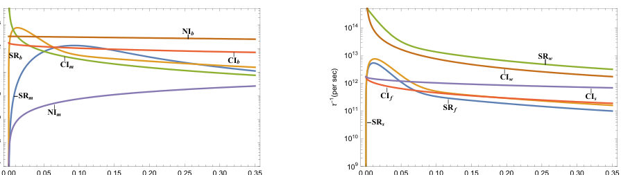
<figcaption class="paper-figure-caption"><b>Fig 1.</b> Figure 1: (a) Energy dependence of the carrier scattering rates, τ −1, in monolayer (subscript m) and bilayer (subscript b) graphene due to surface-roughness (SR), neutral-impurity (NI), and charged-impurity (CI) scattering. (b) Energy dependence of the CI and SR scattering rates in bilayer graphene for three screening regimes: without screening (w), full screening (f), and the asymptotic strong-screening approximation (s). The corresponding rates are denoted by CIw, CIf, CIs and SRw, SRf, SRs.</figcaption>
</figure>
<figure class="paper-figure-card">
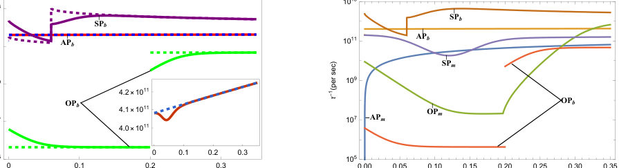
<figcaption class="paper-figure-caption"><b>Fig 2.</b> Figure 2: (a) Calculated carrier transport scattering rates, τ −1, as a function of carrier energy Ek in bilayer graphene for AP (APb), optical-phonon (OPb), and surface-polar-phonon (SPPb) scattering mechanisms. Solid curves represent the results without Pauli-blocking (PB), whereas dashed curves include the PB factor. The inset shows an enlarged view of the acoustic-phonon contribution, highlighting its energy dependence in the range of approximately 0–0.35 eV. (b) Calculated carrier transport scattering rates, τ −1, as a function of carrier energy Ek for monolayer and bilayer graphene due to acoustic-phonon (AP), optical-phonon (OP), and surface-polar-phonon (SPP) scattering mechanisms....</figcaption>
</figure>
<figure class="paper-figure-card">
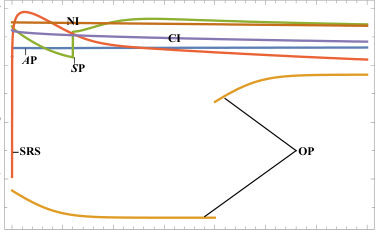
<figcaption class="paper-figure-caption"><b>Fig 3.</b> Figure 3: Calculated carrier transport scattering rates, τ−1, as a function of carrier energy Ek in bilayer graphene for surface-roughness (SR), acoustic-phonon (AP), surface-polar-phonon (SPP), neutral-impurity (NI), charged-impurity (CI), and optical-phonon (OP) scattering mechanisms. The figure compares the relative magnitudes and energy dependences of the different scattering channels over the investigated energy range.</figcaption>
</figure>
</div>

<p><strong>Summary.</strong> This paper analytically treats carrier transport relaxation in bilayer graphene by incorporating multiple scattering mechanisms, including impurities and phonons. It derives closed-form expressions for the relaxation rates using the Boltzmann equation, highlighting the crucial, energy-dependent role of Pauli blocking in determining the dominant scattering channel.</p>
<p><strong>Why it may be interesting.</strong> The detailed analysis of momentum relaxation in a tunable 2D material like BLG, especially the inclusion of Pauli blocking effects, provides insights into non-equilibrium transport dynamics relevant to quantum devices.</p>
<details>
<summary>Detailed structure</summary>
<p><strong>Main problem.</strong> To provide a unified analytical treatment of carrier transport relaxation mechanisms in bilayer graphene (BLG), specifically addressing the influence of Pauli blocking.</p>
<p><strong>Main result.</strong> Neutral-impurity scattering is found to be the dominant relaxation mechanism over a substantial energy range, while Pauli blocking modifies rates in a mechanism- and energy-dependent manner.</p>
<p><strong>Method.</strong> The study uses the semiclassical Boltzmann Transport Equation (BTE) combined with Fermi's golden rule to derive closed-form expressions for various scattering rates.</p>
<p><strong>Model / system.</strong> The system is Bilayer Graphene (BLG) modeled using a low-energy two-band approximation with an approximately parabolic dispersion relation. Scattering is considered from impurities (neutral and charged), acoustic/optical phonons, and substrate polar phonons.</p>
<p><strong>Key observables.</strong> Transport relaxation rates ($  au^{-1}$) as a function of carrier energy ($E_k$), and the relative importance of different scattering channels.</p>
<p><strong>Important parameters / regimes.</strong> Carrier energy ($E_k$), temperature, carrier density (especially in the degenerate regime), and coupling constants for various scattering interactions.</p>
<p><strong>Assumptions / limitations.</strong> The analysis assumes the total scattering rate is additive via Matthiessen's rule, and approximations like the first Born approximation and long-wavelength Thomas–Fermi screening are employed.</p>
<p><strong>Figures summary.</strong> Figures compare the calculated transport scattering rates ($   au^{-1}$) versus carrier energy ($E_k$) for all considered mechanisms, illustrating their relative magnitudes and energy dependencies.</p>
<p><strong>Paper structure.</strong> The paper progresses from establishing the general formalism (BTE/Fermi's Golden Rule) to detailing the specific scattering mechanisms (disorder and phonons), deriving the rate equations incorporating Pauli blocking, and finally comparing the results across different energy regimes.</p>
</details>
<details>
<summary>Abstract</summary>
<p>We present a unified analytical treatment of carrier transport relaxation in bilayer graphene (BLG), including scattering by surface roughness, charged and neutral impurities, acoustic and optical phonons, and substrate polar phonons. The calculation is formulated within the low-energy two-band approximation using Fermi's golden rule and the semiclassical Boltzmann transport equation. Closed-form expressions for the transport relaxation rates are derived and verified by numerical evaluation of the corresponding scattering integrals. Particular attention is given to Pauli blocking, whose influence becomes important under degenerate carrier conditions owing to the approximately parabolic low-energy dispersion and nearly constant density of states of BLG. We find that Pauli blocking modifies the relaxation rates in a mechanism- and energy-dependent manner for both suspended and substrate-supported BLG. For the parameters considered, neutral-impurity scattering provides the dominant contribution over a substantial energy range, while acoustic-phonon and charged-impurity scattering remain important competing mechanisms. Optical-phonon scattering is suppressed below its emission threshold, whereas substrate polar phonons provide an additional relaxation channel in supported BLG. Comparison with monolayer graphene and a conventional two-dimensional electron gas highlights the role of band dispersion, density of states, screening, and chirality in determining the distinct scattering behavior of BLG. These results provide analytical insight into the relative importance of the principal momentum-relaxation mechanisms and the role of Pauli blocking in BLG transport.</p>
</details>
<p><sub><a href="#top">↑ back to top</a></sub></p>

<p><a id="paper-2609.20387"></a></p>
<h3 id="ultralow-tensile-strain-enables-exciton-funneling-and-energy-transfer-to-boost-mose2-photoluminescence-quantum-yield"><a href="http://arxiv.org/abs/2609.20387v1">Ultralow-Tensile Strain Enables Exciton Funneling and Energy Transfer to Boost MoSe2 Photoluminescence Quantum Yield</a></h3>
<p><strong>Authors:</strong> Gayatri, Mehdi Arfaoui, Debashish Das, Mateusz Raczyński, Marta Bilska, Piotr Tatarczak, Aleksandra Krystyna Dąbrowska, Tomasz Kazimierczuk, Takashi Taniguchi, Kenji Watanabe, Piotr Kossacki, Andrzej Wysmołek, Saroj Kumar Nayak, Adam Babiński, Johannes Binder, Maciej R. Molas, Arka Karmakar<br>
<strong>Type:</strong> both · <strong>Category:</strong> other · <strong>PDF:</strong> <a href="https://arxiv.org/pdf/2609.20387v1">https://arxiv.org/pdf/2609.20387v1</a><br>
<strong>Analysis basis:</strong> full PDF text, analyzed in chunks
<strong>Topic relevance:</strong> <code>quantum optics experiment</code> <strong>1/5</strong></p>
<div class="figure-strip-hint">↔ Scroll figures horizontally</div>
<div class="paper-figures-scroll">
<figure class="paper-figure-card">
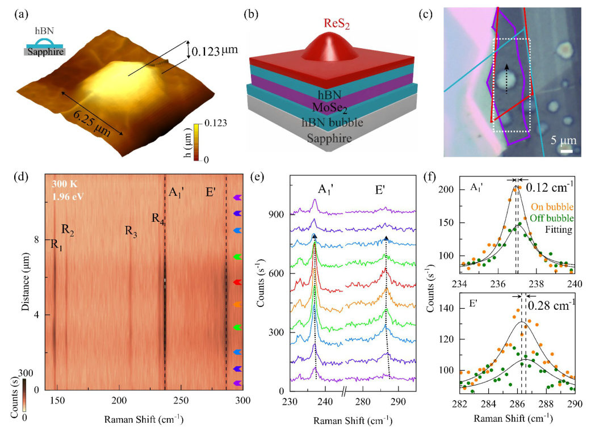
<figcaption class="paper-figure-caption"><b>Fig 1.</b> FIG. 1. (a) Three-dimensional AFM image of the hBN bubble on the sapphire substrate, showing a height of ∼0.12 µm and base diameter of ∼6.25 µm. (b) Schematic illustration of the HS cross-section (from top): ML ReS2, interlayer hBN, ML MoSe2 and the bottom hBN bubble/sapphire substrate. (c) Optical image of the sample. Colored outlines correspond to the layers shown in (b). (d) RT Raman intensity map along the black dotted arrow shown in (c) measured using 1.96 eV excitation. Overall, Raman intensity on the bubble is significantly higher as compared to the outside of the bubble. (e) Selected Raman spectra from different positions along the line scan shown in (d) — showing small shifts in...</figcaption>
</figure>
<figure class="paper-figure-card">
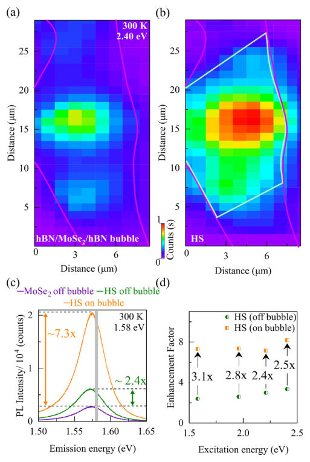
<figcaption class="paper-figure-caption"><b>Fig 2.</b> FIG. 2. (a) Spatially resolved RT PL intensity map un- der 2.40 eV excitation from the white dotted area marked in Fig.1(c) prior to the transfer of top ReS2 layer. The marked area indicates the ML MoSe2 region. MoSe2 emis- sion is stronger in the bubble region than in the surrounding flat region. (b) PL intensity map of the same region under the same experimental conditions, after placing the top ReS2 layer. HS area at the bubble apex shows the maximum PL intensity. (c) RT PL spectra measured under 1.58 eV exci- tation, from ML MoSe2, on bubble and off bubble HS areas show ∼7.3× and ∼2.4× enhancement, respectively. The gray shaded line indicates the spectral range blocked by the Bragg...</figcaption>
</figure>
<figure class="paper-figure-card">
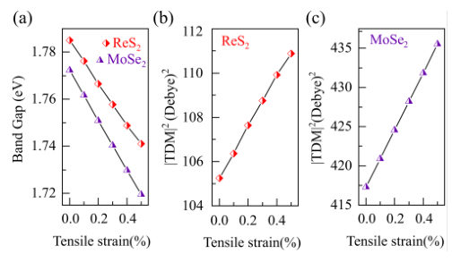
<figcaption class="paper-figure-caption"><b>Fig 3.</b> FIG. 3. (a) First-principles DFT calculations of the elec- tronic band structures of both TMDCs showing a contin- uous reduction of the bandgaps with an increasing biaxial tensile strain. The solid lines are guides to the eye. ReS2 al- ways maintains a higher bandgap than MoSe2 throughout this range. (b–c) Calculated |TDM|2 for MLs of ReS2 and MoSe2, respectively, as a function of biaxial tensile strain. |TDM|2</figcaption>
</figure>
<figure class="paper-figure-card">
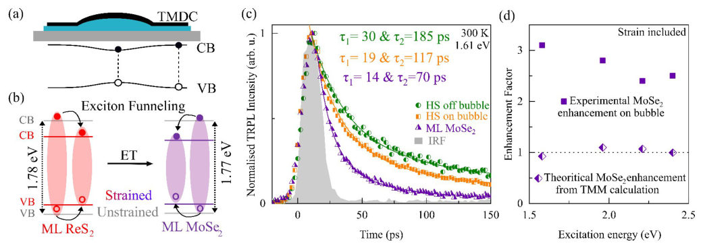
<figcaption class="paper-figure-caption"><b>Fig 4.</b> FIG. 4. (a,b) Schematic illustration of strain-induced bandgap modulation and exciton funneling and the proposed dipole- mediated ET pathway from ReS2 to MoSe2. (c) RT TRPL spectra acquired from the ML MoSe2, and the strained and unstrained HS area under 1.61 eV excitation. The gray shaded region shows the instrument response function (IRF). The decay curves are fitted using a biexponential decay function to extract the fast (τ1) and slow (τ2) decay components. The strained HS exhibits a faster decay components than the unstrained HS. (d) Strain dependent TMM calculation of the MoSe2 optical enhancement factor shows a near unity value for the entire excitation range. The adopted model shows...</figcaption>
</figure>
</div>

<p><strong>Summary.</strong> This research demonstrates that applying minute biaxial tensile strain to a vdW heterostructure ($ ext{ReS}_2/ ext{hBN}/   ext{MoSe}_2$) can dramatically enhance its photoluminescence quantum yield. The enhancement stems from a synergistic effect: the strain funnels excitons toward high-strain regions while simultaneously boosting energy transfer efficiency. This offers a powerful, strain-tunable route for designing high-performance 2D optoelectronic devices.</p>
<p><strong>Why it may be interesting.</strong> This work provides a concrete, tunable platform for controlling quantum optical properties in 2D materials by coupling mechanical strain to electronic structure and energy transfer pathways, which is highly relevant for quantum light sources.</p>
<details>
<summary>Detailed structure</summary>
<p><strong>Main problem.</strong> The goal is to enhance the photoluminescence (PL) quantum yield (QY) in van der Waals (vdW) heterostructures by synergistically combining strain engineering and interlayer energy transfer (ET).</p>
<p><strong>Main result.</strong> Applying only a small biaxial tensile strain ($\sim 0.1\%$) enables efficient exciton funneling and boosts the relative PL QY by approximately 8-fold in a $   ext{ReS}_2/ ext{hBN}/   ext{MoSe}_2$ heterostructure.</p>
<p><strong>Method.</strong> The study combines experimental measurements (PL mapping, Raman spectroscopy, Time-Resolved PL) with theoretical calculations (DFT and coherent transfer-matrix method) to confirm the underlying physical mechanisms.</p>
<p><strong>Model / system.</strong> The physical system is a multilayer vdW heterostructure ($  ext{ReS}_2/ ext{hBN}/   ext{MoSe}_2$) placed on a substrate, where localized tensile strain is induced using $  ext{hBN}$ bubbles. The physics involves exciton dynamics, energy transfer, and strain-dependent band structure modification.</p>
<p><strong>Key observables.</strong> PL Quantum Yield (QY) enhancement factor ($\sim 8	imes$), PL redshift (indicating strain), and exciton decay lifetimes ($   au_1,   au_2$).</p>
<p><strong>Important parameters / regimes.</strong> Tensile strain ($\sim 0.1\%$), $    ext{hBN}$ spacer thickness ($\sim 12 	ext{ nm}$), and excitation energies ($1.58 	ext{ eV}$ to $2.40 	ext{ eV}$).</p>
<p><strong>Assumptions / limitations.</strong> The enhancement mechanism is confirmed to be due to strain-induced funneling and ET, ruling out optical interference effects via TMM calculations.</p>
<p><strong>Figures summary.</strong> Figures show AFM images of the bubble structure, Raman maps confirming strain gradients, and PL intensity maps demonstrating localized enhancement at the bubble apex.</p>
<p><strong>Paper structure.</strong> The paper establishes the problem by reviewing strain/ET control in vdW materials, presents the experimental setup using engineered $  ext{hBN}$ bubbles, measures strain and PL enhancement, and supports the findings with theoretical modeling of exciton dynamics.</p>
</details>
<details>
<summary>Abstract</summary>
<p>Strain engineering is a powerful route for controlling the exciton dynamics in van der Waals (vdW) heterostructures (HSs). The interlayer energy transfer (ET) process is another key factor in controlling the photocarrier relaxation pathways in vdW HSs. In this work, we combine these two processes to achieve an 8-fold enhancement to the relative photoluminescence (PL) quantum yield (QY) in a HS formed from monolayers of ReS2 and MoSe2, separated by a thin hBN interlayer, placed onto an hBN bubble. We achieve this enhancement by applying only 0.1% biaxial tensile strain, which results in efficient exciton funneling and an increased transition dipole moment. Our experimental data are supported by first-principles density-functional theory and coherent transfer-matrix method calculations, ruling out optical interference as the dominant origin of the enhancement. This work provides an innovative route for enhancing the PL QY of vdW materials via interplay between the tensile strain and the ET process.</p>
</details>
<p><sub><a href="#top">↑ back to top</a></sub></p>

<p><a id="paper-2609.19303"></a></p>
<h3 id="unified-transport-and-susceptibility-analysis-of-a-thin-bscco-film-from-local-pairing-to-global-phase-coherence"><a href="http://arxiv.org/abs/2609.19303v1">Unified Transport and Susceptibility Analysis of a Thin BSCCO Film: From Local Pairing to Global Phase Coherence</a></h3>
<p><strong>Authors:</strong> Santu Prasad Jana, Bismaya Ranjan Nayak, Sohini Guin, Akshay Naik, Dhavala Suri, Arindam Ghosh<br>
<strong>Type:</strong> both · <strong>Category:</strong> strongly correlated electrons · <strong>PDF:</strong> <a href="https://arxiv.org/pdf/2609.19303v1">https://arxiv.org/pdf/2609.19303v1</a><br>
<strong>Analysis basis:</strong> full PDF text, analyzed in chunks
<strong>Topic relevance:</strong> <code>Keldysh / 2PI / non-Gaussian methods</code> <strong>1/5</strong></p>
<div class="figure-strip-hint">↔ Scroll figures horizontally</div>
<div class="paper-figures-scroll">
<figure class="paper-figure-card">
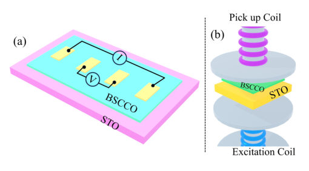
<figcaption class="paper-figure-caption"><b>Fig 1.</b> FIG. 1. Experimental configurations for (a) four-probe resistance–temperature (R-T) measurements and (b) AC magnetic susceptibility measurements of the BSCCO thin film on an STO substrate.</figcaption>
</figure>
<figure class="paper-figure-card">
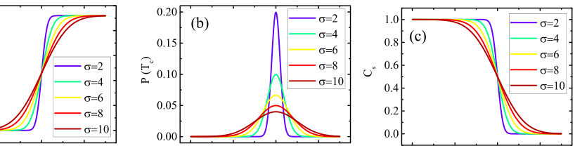
<figcaption class="paper-figure-caption"><b>Fig 2.</b> FIG. 2. Superconducting transition simulated using a Gaussian distribution of local transition temperatures. (a) Resistance R(T) calculated for different standard deviations σ. (b) Corresponding probability distributions P(Tc). (c) Superconducting fraction Cs(T). Increasing σ broadens the resistive transition and produces a more gradual development of the superconducting fraction, while the mean transition temperature Tc0 remains fixed.</figcaption>
</figure>
<figure class="paper-figure-card">
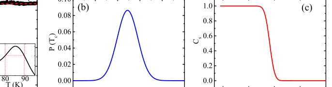
<figcaption class="paper-figure-caption"><b>Fig 3.</b> FIG. 3. Gaussian-distribution analysis of the superconducting transition. (a) Experimental resistance R(T) (black circles) and fit obtained using the cumulative Gaussian model (red dashed line). The inset shows the temperature derivative dR/dT; the horizontal and vertical dashed lines indicate the half-maximum level and corresponding temperatures used to determine the full width at half maximum (FWHM) of the derivative peak. (b) Probability distribution P(Tc) of local superconducting transition temperatures obtained from the fitted parameters. (c) Corresponding superconducting fraction Cs(T) calculated from the fitted Tc distribution.</figcaption>
</figure>
<figure class="paper-figure-card">
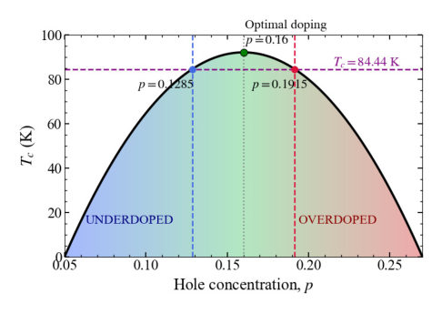
<figcaption class="paper-figure-caption"><b>Fig 4.</b> FIG. 4. Empirical Tc–p superconducting dome for Bi2Sr2CaCu2O8+δ calculated using the Presland relation. The measured value Tc0 = 84.44 K gives two possible hole concentrations, p = 0.1285 (underdoped) and p = 0.1915 (overdoped), located symmetrically about the optimal value p = 0.16.</figcaption>
</figure>
<figure class="paper-figure-card">
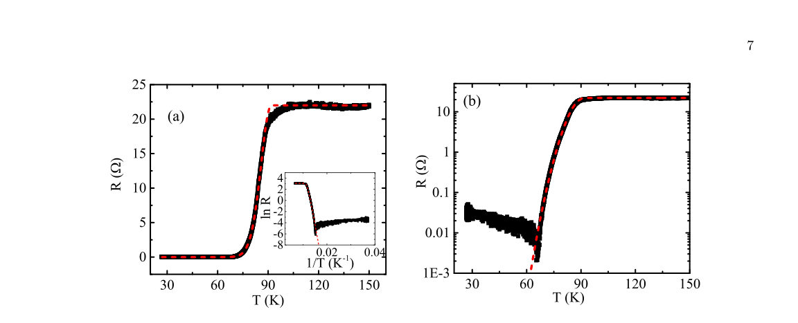
<figcaption class="paper-figure-caption"><b>Fig 5.</b> FIG. 5. Comparison of the measured resistance with the Ambegaokar–Halperin model. (a) Resistance R(T) on a linear scale, showing the experimental data (black symbols) and AH fit (red dashed line). The inset shows an Arrhenius representation of ln R as a function of 1/T; the linear fit is used to estimate an effective activation energy. (b) Same data and AH fit on a semilogarithmic scale, emphasizing the low-resistance region of the transition.</figcaption>
</figure>
</div>

<p><strong>Summary.</strong> This work develops a unified theoretical and experimental framework to analyze the superconducting transition in inhomogeneous high-Tc films like BSCCO. By combining transport and magnetic susceptibility measurements, the authors demonstrate that the transition is not instantaneous but proceeds through distinct stages, from local pairing to global phase coherence. This approach successfully distinguishes the physics of highly disordered superconductors from those with more uniform superconducting properties.</p>
<p><strong>Why it may be interesting.</strong> The framework provides a powerful, quantitative method to decouple different physical processes—such as local pairing versus long-range phase locking—which is crucial for understanding complex, disordered superconductors where multiple energy scales compete.</p>
<details>
<summary>Detailed structure</summary>
<p><strong>Main problem.</strong> The study aims to understand the complex superconducting transition in thin high-Tc films by developing a unified framework that connects local pairing mechanisms to the establishment of global phase coherence.</p>
<p><strong>Main result.</strong> The superconducting transition is found to be a progressive process, occurring in distinct stages: local pairing onset, superconducting fraction expansion, magnetic screening development, and finally, global phase coherence establishment.</p>
<p><strong>Method.</strong> The authors combine electrical transport measurements (analyzing resistive transitions using Gaussian distributions) with AC magnetic susceptibility measurements, extending the Choy-Stoneham model.</p>
<p><strong>Model / system.</strong> The primary system is a thin Bi2Sr2CaCu2O8+delta (BSCCO) film. The analysis models spatial inhomogeneity using a Gaussian distribution of local Tc values and incorporates phase dynamics via the Ambegaokar-Halperin model and a temperature-dependent connectivity factor.</p>
<p><strong>Key observables.</strong> Resistive transition R(T), superconducting fraction C_s(T), magnetic susceptibility $\chi(T)$, and characteristic temperatures ($T_{AHc}, T_{c0}, T_{\chi}, T_J$).</p>
<p><strong>Important parameters / regimes.</strong> The separation between the mean resistive transition temperature ($T_{c0}$) and the connectivity midpoint temperature ($T_J$) is a key diagnostic parameter, which is compared across different material systems (BSCCO vs. NbTiN).</p>
<p><strong>Assumptions / limitations.</strong> The analysis assumes that the resistive transition can be modeled by a Gaussian distribution of local Tc values, and that the magnetic response can be effectively described by modifying the Choy-Stoneham susceptibility model with a connectivity factor.</p>
<p><strong>Figures summary.</strong> Figures illustrate the progressive nature of the transition, showing how different physical responses (resistance, susceptibility) map onto distinct temperature regimes. Table I compares transition parameters across BSCCO, NbTiN, and nanoporous NbN.</p>
<p><strong>Paper structure.</strong> The paper first establishes the need for a unified framework by analyzing BSCCO films, detailing the combined use of transport and susceptibility data. It then develops the mathematical models (Gaussian $P(T_c)$, modified susceptibility) and applies them to characterize the sequential nature of the transition. Finally, the framework is validated by applying it to other superconducting systems (NbTiN, NbN) to show its general applicability.</p>
</details>
<details>
<summary>Abstract</summary>
<p>The superconducting transition in thin high-$T_c$ films can be significantly broadened by disorder, spatial inhomogeneity, and phase fluctuations. Here, we study the transition in a 30-nm-thick sputter-grown Bi$_2$Sr$_2$CaCu$_2$O$_{8+δ}$ (BSCCO) film through electrical-transport and ac-susceptibility measurements. The resistive transition is examined using a Gaussian distribution of local $T_c$ values and the Ambegaokar--Halperin model, describing spatial variations in superconductivity and thermally activated phase dynamics, respectively. To relate the transport and magnetic responses, we extend the Choy--Stoneham susceptibility model by introducing the superconducting fraction extracted from transport and a temperature-dependent connectivity factor representing the gradual development of Josephson coupling among superconducting regions. The results identify separate temperature regimes corresponding to the onset of local superconductivity, expansion of the superconducting fraction, development of magnetic screening, and establishment of global phase coherence. The transition therefore proceeds progressively, from locally superconducting regions to a connected, phase-coherent state. This analysis provides a common framework for relating spatial inhomogeneity, dissipative phase dynamics, and magnetic screening in inhomogeneous superconducting films.</p>
</details>
<p><sub><a href="#top">↑ back to top</a></sub></p>
<h3 id="other-secondary-papers-3">Other secondary papers (3)</h3>
<details>
<summary>Show other secondary papers</summary>

<p><a id="paper-2609.19490"></a></p>
<h3 id="pairing-symmetry-and-superconductivity-from-long-range-coulomb-interactions-in-the-extended-t-t-t-jz-model-for-cuprates"><a href="http://arxiv.org/abs/2609.19490v1">Pairing symmetry and superconductivity from long-range Coulomb interactions in the extended t-t'-t''-Jz model for cuprates</a></h3>
<p><strong>Authors:</strong> U. A. Diaz-Reynoso, F. Mireles<br>
<strong>Type:</strong> theory · <strong>Category:</strong> strongly correlated electrons · <strong>PDF:</strong> <a href="https://arxiv.org/pdf/2609.19490v1">https://arxiv.org/pdf/2609.19490v1</a><br>
<strong>Analysis basis:</strong> full PDF text, analyzed in chunks</p>
<div class="figure-strip-hint">↔ Scroll figures horizontally</div>
<div class="paper-figures-scroll">
<figure class="paper-figure-card">
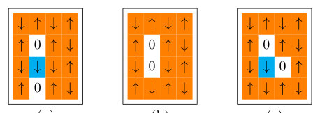
<figcaption class="paper-figure-caption"><b>Fig 1.</b> FIG. 1. Three high-symmetry two-hole configurations in a 4 × 4 antiferromagnetic lattice. The staggered magnetization Sz i,j = (−1)i+jSz(i, j) is indicated with a background color in orange/blue for positive/negative values. Here, Sz(i, j) = ±1/2 for spin ↑, ↓(respectively) is the on-site magnetization at site (i, j), with i = j = −1 at bottom-left corner. Empty sites (holes) are blank and marked with 0. Using the D4 gen- erators defined in the text: (a) is invariant under sr3 (hori- zontal) and r2 (180◦rotation), implying sr (vertical); (b) is invariant under sr; (c) is invariant under s.</figcaption>
</figure>
<figure class="paper-figure-card">
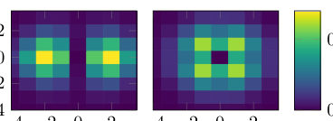
<figcaption class="paper-figure-caption"><b>Fig 2.</b> FIG. 2. Hole-hole correlation function Ch(r) for (a) the |px⟩ component of the degenerate ground state, and (b) the first excited state dx2−y2 . In each case, Ch(r) exhibits the same spatial symmetry as the corresponding state.</figcaption>
</figure>
<figure class="paper-figure-card">
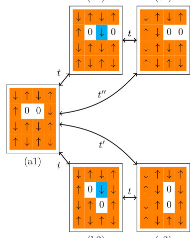
<figcaption class="paper-figure-caption"><b>Fig 3.</b> FIG. 3. Schematic depiction of the hopping sequences for hole-pair propagation. The |px⟩state propagates by (1, 0) via the t-mediated sequence (a1)-(b1)-(c1), while the dx2−y2</figcaption>
</figure>
<figure class="paper-figure-card">
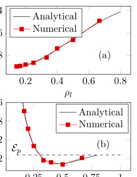
<figcaption class="paper-figure-caption"><b>Fig 4.</b> FIG. 7. Comparison of the energy cost to add holes to a unidirectional stripe as a function of the linear hole density ρl, contrasting the rigid-band approximation with numerical estimates. (a) Within the rigid approximation, hole addition to the antiphase domain wall follows a simple one-dimensional filling rule. (b) The numerically computed energy per hole in a single stripe ES (for J = 0.4, t = 1, t′ = −0.3, and t′′ = 0.2; remaining parameters are given in the main text) exhibits a minimum at ρl ≈0.5. At this density, ES is approximately 0.1t lower than the pair energy, i.e., ES −Ep ≈−0.1t.</figcaption>
</figure>
<figure class="paper-figure-card">
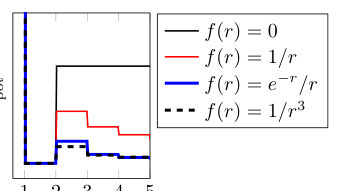
<figcaption class="paper-figure-caption"><b>Fig 5.</b> FIG. 8. Total potential energy (in a.u.) as a function of hole separation r (in lattice units), computed for various repul- sive interaction potentials with V = J/2. The minima of the potential energy pockets have been aligned for direct compar- ison.</figcaption>
</figure>
</div>
<p><strong>Summary.</strong> This paper models cuprate superconductivity using an extended $t-t'-t''-J_z$ Hamiltonian that includes long-range Coulomb repulsion. The study finds that the pairing symmetry depends critically on hopping parameters and demonstrates that repulsive interactions can stabilize reentrant superconductivity in the underdoped regime. The methodology combines advanced quantum many-body techniques with symmetry analysis to diagnose superconducting order.</p>
<p><strong>Why it may be interesting.</strong> This work provides a detailed theoretical framework for understanding high-Tc superconductivity by incorporating multiple hopping terms and long-range Coulomb repulsion, which is a key challenge in strongly correlated electron theory.</p>
<details>
<summary>Detailed structure</summary>
<p><strong>Main problem.</strong> The study investigates the pairing symmetry and superconducting behavior in cuprate superconductors, addressing the limitations of existing models in describing superconductivity across the full doping range.</p>
<p><strong>Main result.</strong> The pairing symmetry is highly sensitive to the hopping parameters ($t', t''$), and repulsive Coulomb interactions are shown to drive reentrant superconducting behavior in the underdoped regime, consistent with experimental observations.</p>
<p><strong>Method.</strong> The authors use theoretical calculations on an extended two-dimensional $t-t'-t''-J_z$ model, employing techniques like the truncated Lanczos method and symmetry analysis based on the $ ext{D}_4$ point group.</p>
<p><strong>Model / system.</strong> The system is the extended two-dimensional $t-t'-t''-J_z$ model, which incorporates nearest, second, and third-nearest neighbor hopping terms ($t, t', t''$), an Ising-like antiferromagnetic interaction ($J_z$), and long-range Coulomb repulsive interactions ($H_V$).</p>
<p><strong>Key observables.</strong> Pairing symmetry (p-wave, d-wave, or coexisting), pair-pair correlation function $P_{xx}(|r|)$, and the superconducting phase diagram ($\delta$ vs. $V$).</p>
<p><strong>Important parameters / regimes.</strong> Hopping parameters ($t', t''$), doping level ($\delta$), and the strength of repulsive interactions ($V$).</p>
<p><strong>Assumptions / limitations.</strong> The analysis uses the large-$U$ limit of the Hubbard model, approximates the spin exchange with an Ising term ($H_{Jz}$), and utilizes the Clifford torus distance metric for long-range interactions.</p>
<p><strong>Figures summary.</strong> Figures illustrate high-symmetry two-hole configurations and show the decay of the pair-pair correlation function $P_{xx}(|r|)$, confirming long-range order for superconducting states. A phase diagram maps reentrant superconductivity based on doping and repulsion.</p>
<p><strong>Paper structure.</strong> The paper systematically analyzes the Hamiltonian components, determines the ground state symmetry using group theory, diagnoses superconductivity via correlation functions, and finally maps out the superconducting phase diagram showing reentrant behavior.</p>
</details>
<details>
<summary>Abstract</summary>
<p>We investigate the pairing symmetry of the ground-state phase diagram of an extended two-dimensional $t$-$t'$-$t''$-$J_z$ model, in which the first-, second-, and third-nearest neighbor electron hopping terms ($t,t'$ and $t''$) and an anisotropic Ising-like antiferromagnetic interaction $J_z$ are treated on the same framework. We find that the dominant pairing symmetry depends sensitively on the sign and magnitude of the hopping parameters $t'$ and $t''$, showing pure $p$-wave, pure $d$-wave, or coexisting pairing channels, highlighting the decisive role of these terms. We further explore the role of the long-range and short-range repulsive interactions in the formation of pairs and analyze the specific case of hole-doped cuprates. Our results indicate that repulsive interactions favors hole pair escaping of the stripe domains. Furthermore, pairing correlation calculations strongly suggest that repulsive Coulomb interactions drive reentrant superconducting behavior at experimentally observed underdoped regime ($δ\approx0.07$ to $0.15$), as in Neodymium-based cuprates.</p>
</details>
<p><sub><a href="#top">↑ back to top</a></sub></p>

<p><a id="paper-2609.20379"></a></p>
<h3 id="predictive-structure-to-thermal-conductivity-modeling-framework-for-beol-interconnect-stacks-in-advanced-technology-nodes-enabled-by-extensive-layer-resolved-thermal-measurements"><a href="http://arxiv.org/abs/2609.20379v1">Predictive Structure to Thermal Conductivity Modeling Framework for BEOL Interconnect Stacks in Advanced Technology Nodes Enabled by Extensive Layer Resolved Thermal Measurements</a></h3>
<p><strong>Authors:</strong> Zifeng Huang, Yiyang Sun, Tianyu Jia, Runsheng Wang, Zhe Cheng<br>
<strong>Type:</strong> both · <strong>Category:</strong> other · <strong>PDF:</strong> <a href="https://arxiv.org/pdf/2609.20379v1">https://arxiv.org/pdf/2609.20379v1</a><br>
<strong>Analysis basis:</strong> full PDF text, analyzed in chunks</p>
<div class="figure-strip-hint">↔ Scroll figures horizontally</div>
<div class="paper-figures-scroll">
<figure class="paper-figure-card">
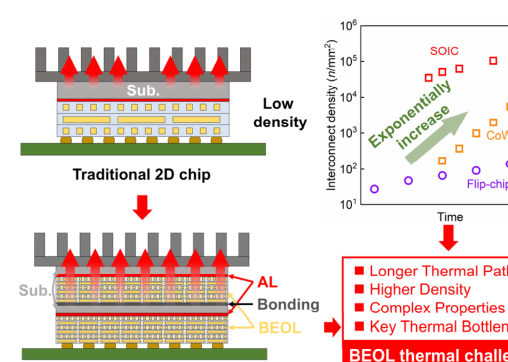
<figcaption class="paper-figure-caption"><b>Fig 1.</b> Fig. 1. Motivation of this work: The rapid evolution of conventional chips toward advanced 2.5D/3D integrated systems has led to an exponential increase in interconnect density. This increase results in longer thermal dissipation paths and more complex heat transport characteristics, making the BEOL interconnect stack a major bottleneck for advanced thermal management.</figcaption>
</figure>
<figure class="paper-figure-card">
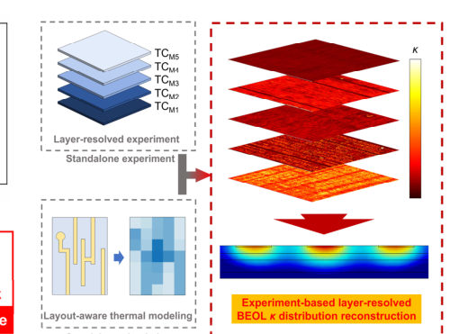
<figcaption class="paper-figure-caption"><b>Fig 2.</b> Fig. 2. Comparison between conventional standalone experimental/simulation approaches and the proposed coupled experiment–simulation framework for layer-resolved BEOL thermal conductivity reconstruction.</figcaption>
</figure>
<figure class="paper-figure-card">
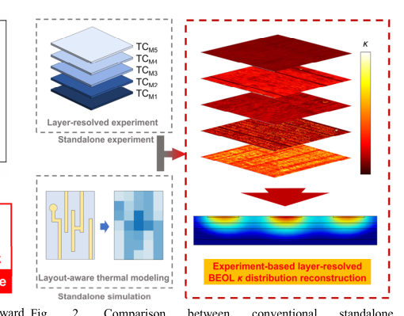
<figcaption class="paper-figure-caption"><b>Fig 3.</b> Fig. 4. Schematic illustration of the TDTR experimental setup used in this study.</figcaption>
</figure>
<figure class="paper-figure-card">
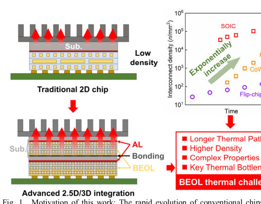
<figcaption class="paper-figure-caption"><b>Fig 4.</b> Fig. 3. Schematic of sample preparation and the measurement workflow. (a) Original BEOL structure of the chip. (b) Exposed BEOL stack after P-FIB delayering. (c) Al transducer layer deposition followed by sequential measurements. (d) Optical and surface morphology observation during the actual experiment.</figcaption>
</figure>
<figure class="paper-figure-card">
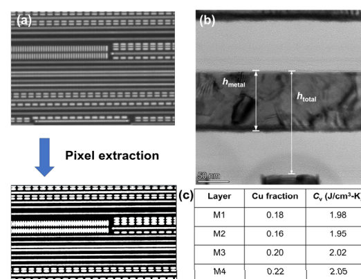
<figcaption class="paper-figure-caption"><b>Fig 5.</b> Fig. 5. Workflow of volumetric heat capacity extraction for individual layers: (a) Identification of Cu regions by extracting high-brightness pixels from the SEM image to yield the surface Cu fraction. (b) Determination of the total Cu fraction by combining hmetal and htotal. (c) Extracted volumetric heat capacity (CV) of each individual interconnect layer.</figcaption>
</figure>
</div>
<p><strong>Summary.</strong> This paper develops a novel, structure-aware framework to predict the thermal conductivity of complex BEOL interconnect stacks in advanced microelectronics. By combining extensive time-domain thermoreflectance measurements with statistical modeling, the authors create an empirical model that accounts for nanoscale structural variations. This allows for highly accurate thermal analysis, which is crucial for preventing hotspots in next-generation 3D integrated circuits.</p>
<p><strong>Why it may be interesting.</strong> Not directly relevant</p>
<details>
<summary>Detailed structure</summary>
<p><strong>Main problem.</strong> The increasing structural complexity of BEOL interconnect stacks in advanced ICs requires a structure-aware thermal conductivity modeling framework because conventional models fail to capture local thermal variations.</p>
<p><strong>Main result.</strong> The authors established an experimentally derived, generalizable framework that predicts thermal conductivity ($\kappa$) based on interconnect structure, showing that neglecting local inhomogeneity underestimates temperature rise.</p>
<p><strong>Method.</strong> The framework combines Time-Domain Thermoreflectance (TDTR) measurements to gather extensive layer-resolved data, which is then used with statistical analysis and Effective Medium Theory (EMT) to build predictive models.</p>
<p><strong>Model / system.</strong> The physical system is the Back-End-of-Line (BEOL) interconnect stack in advanced integrated circuits. The model predicts $\kappa$ as a function of structural parameters like linewidth ($w$) and Cu volume fraction ($f$).</p>
<p><strong>Key observables.</strong> Thermal conductivity ($\kappa$), layer-resolved $\kappa$ distributions, and maximum temperature rise.</p>
<p><strong>Important parameters / regimes.</strong> Interconnect linewidth ($w$), Cu volume fraction ($f$), and thermal boundary resistance (TBR) parameters ($A, B, w_0$).</p>
<p><strong>Assumptions / limitations.</strong> The framework assumes that the thermal behavior can be generalized from measured layer-resolved data and that EMT can accurately map spatial variations within layers.</p>
<p><strong>Figures summary.</strong> Figures illustrate the TDTR setup, sample preparation, the empirical $\kappa$ prediction model vs. experimental data, and Finite Element Analysis (FEA) results comparing averaged vs. spatially resolved thermal predictions.</p>
<p><strong>Paper structure.</strong> The paper progresses from identifying the limitations of current thermal models (motivation) to presenting the experimental methodology (TDTR measurements on BEOL stacks), deriving the structure-aware empirical model, and finally validating the framework using FEA to demonstrate the necessity of local thermal inhomogeneity.</p>
</details>
<details>
<summary>Abstract</summary>
<p>The increasing structural complexity of BEOL interconnect stacks in advanced integrated circuits demands a structure-aware thermal conductivity (\k{appa}) modeling framework. However, generalizable models derived from layer-resolved thermal measurements that quantitatively capture the dependence of \k{appa} on interconnect structures remain lacking, limiting predictive thermal analysis. Here, we establish an experimentally derived, structure-aware \k{appa} modeling framework enabled by time-domain thermoreflectance measurements with ~100 nm depth resolution. Statistical analysis of a compiled dataset comprising over 40 experimentally measured layer-resolved \k{appa} values across diverse BEOL layers reveals a generalizable empirical structure-to-\k{appa} relationship, enabling predictive modeling based on interconnect structure. An intra-layer three-dimensional \k{appa} distribution model based on effective medium theory and realistic layouts further resolves spatial \k{appa} variations within practical interconnect layers. Together, these models establish an experimentally derived, structure-aware \k{appa} modeling framework for predictive and generalizable thermal analysis of advanced interconnect stacks and 3D ICs.</p>
</details>
<p><sub><a href="#top">↑ back to top</a></sub></p>

<p><a id="paper-2609.19727"></a></p>
<h3 id="vortex-mediated-spin-current-injection-into-two-dimensional-superconductor-nbse2"><a href="http://arxiv.org/abs/2609.19727v1">Vortex-mediated spin current injection into two-dimensional superconductor NbSe2</a></h3>
<p><strong>Authors:</strong> Meng Yang, Xiaolong Yin, Jingjing Liu, Yifeng Chen, Qinwu Gao, Hongxing Zhu, Danni Huang, Lang Chen, Shuo-Ying Yang, Junxue Li<br>
<strong>Type:</strong> experiment · <strong>Category:</strong> other · <strong>PDF:</strong> <a href="https://arxiv.org/pdf/2609.19727v1">https://arxiv.org/pdf/2609.19727v1</a><br>
<strong>Analysis basis:</strong> full PDF text, analyzed in chunks</p>
<div class="figure-strip-hint">↔ Scroll figures horizontally</div>
<div class="paper-figures-scroll">
<figure class="paper-figure-card">

<figcaption class="paper-figure-caption"><b>Fig 1.</b> Fig. 1. Vortex Nernst effect and vortex-mediated spin current injection. (A) Vortex Nernst effect. In a type-</figcaption>
</figure>
<figure class="paper-figure-card">

<figcaption class="paper-figure-caption"><b>Fig 2.</b> Fig. 2. Device architecture and thermoelectric transport measurements. (A, D) Schematics of the</figcaption>
</figure>
<figure class="paper-figure-card">

<figcaption class="paper-figure-caption"><b>Fig 3.</b> Fig. 3. Temperature-magnetic field phase diagram of the thermoelectric voltage. (A, B) Magnetic field</figcaption>
</figure>
<figure class="paper-figure-card">

<figcaption class="paper-figure-caption"><b>Fig 4.</b> Fig. 4. Temperature dependence of the thermoelectric voltage. (A, B), Thermoelectric voltage as a function of</figcaption>
</figure>
</div>
<p><strong>Summary.</strong> This paper investigates the injection of pure spin current into a superconductor using a $ ext{NbSe}_2/    ext{LAFO}$ heterostructure. By measuring a sign-reversed thermoelectric signal, the authors demonstrate that topological vortices act as efficient carriers of spin angular momentum. This opens a new pathway for designing vortex-mediated superconducting spintronic devices.</p>
<p><strong>Why it may be interesting.</strong> The work bridges superconducting physics with spintronics by proposing a novel, measurable mechanism (vortex-mediated spin current) that can be probed using established superconducting transport measurements.</p>
<details>
<summary>Detailed structure</summary>
<p><strong>Main problem.</strong> Injecting pure spin current into superconductors remains a major challenge in superconducting spintronics.</p>
<p><strong>Main result.</strong> The study reports a pronounced, sign-reversed thermoelectric peak in a superconductor/ferrimagnetic insulator bilayer, establishing vortices as efficient carriers of spin information.</p>
<p><strong>Method.</strong> Thermoelectric transport measurements were performed on a $ ext{NbSe}_2/    ext{LAFO}$ bilayer using an out-of-plane temperature gradient and sweeping an in-plane magnetic field.</p>
<p><strong>Model / system.</strong> The system is an $  ext{NbSe}_2/    ext{LiAl}_2 ext{Fe}_3   ext{O}_8$ ($    ext{LAFO}$) bilayer, an Ising superconductor/ferrimagnetic insulator heterostructure, studied in the vortex liquid phase of a type-II superconductor.</p>
<p><strong>Key observables.</strong> Thermoelectric peak ($ ext{V}_{2\omega}$), resistance ($    ext{R}$), and the comparison of the signal sign relative to the conventional vortex Nernst effect.</p>
<p><strong>Important parameters / regimes.</strong> Out-of-plane temperature gradient, in-plane magnetic field, and the superconducting transition temperature ($T_c$).</p>
<p><strong>Assumptions / limitations.</strong> The observed signal is attributed to vortex motion driven by spin current injection, which is confirmed by the signal vanishing above $T_c$ and the sign reversal relative to thermal effects.</p>
<p><strong>Figures summary.</strong> Figures illustrate the theoretical mechanisms (VNE vs. VMSC), device setups for $  ext{NbSe}_2/    ext{LAFO}$ and control samples, and the field/temperature phase diagram showing the vortex liquid regime.</p>
<p><strong>Paper structure.</strong> The paper establishes the challenge of spin current injection, details the $   ext{SC}/    ext{FMI}$ setup, presents measurements showing a sign-reversed thermoelectric peak, and concludes by confirming the vortex-mediated mechanism and its implications for spintronics.</p>
</details>
<details>
<summary>Abstract</summary>
<p>Injection of pure spin current into superconductors remains a major challenge in superconducting spintronics. Previous studies have primarily focused on spin-polarized quasiparticles and spin-triplet supercurrents, while vortices, ubiquitous topological defects in type-2 superconductors, have been theoretically proposed as alternative carriers of spin angular momentum, yet direct experimental evidence is still lacking. Here, we report the vortex-mediated spin current injection in NbSe2/LiAl2Fe3O8(LAFO) bilayer, an Ising superconductor/ferrimagnetic insulator heterostructure. Under an out-of-plane temperature gradient and an in-plane magnetic field, the NbSe2/LAFO bilayer shows a pronounced thermoelectric peak near the upper critical magnetic field, which has the opposite sign to the conventional vortex Nernst signal observed in a single-layer NbSe2. The sign reversal suggests that the vortex flow induced by spin current injection is opposite to the flow driven by the temperature gradient, which is consistent with theoretical mechanisms including spin-vorticity transmutation and the inverse vortex spin Hall effect. By mapping the field temperature phase diagram, we reveal that the spin current injection occurs exclusively in the vortex liquid phase of NbSe2. Absence of the thermoelectric signal above the superconducting transition temperature further rules out the quasiparticle contribution. Our results establish vortices as efficient carriers of spin information in superconductors, opening a new route towards vortex-mediated superconducting spintronic devices.</p>
</details>
<p><sub><a href="#top">↑ back to top</a></sub></p>
</details>

<hr>
<p>
<a href="index.html">← Index</a>
 · <a href="papers_07.html">← Previous</a>
</p>
<hr>

</body>
</html>
